RoadmapBench: Evaluating Long-Horizon Agentic Software Development Across Version Upgrades
RoadmapBench：跨版本升级的长程 Agent 软件开发
跨版本升级的长程软件开发任务（Harbor 环境封装，OpenHands 脚手架）；最强 Claude Opus 4.7 resolved 仅 39.1%。
翻译范围：正文全部段落走三步精翻（直译→反思→雅化）；脚注与参考文献不译；公式、数字、模型名、数据集名、引用标记按原文 Unicode 保真；表格还原为可复制文本。
MAY 20, 20262026年5月20日
ROADMAPBENCH: Evaluating Long-Horizon AgenticROADMAPBENCH：跨版本升级的长程
Software Development Across Version UpgradesAgent 软件开发评估
Xinbo Xu1,2, Ruihan Yang3, Haiyang Shen1,2, Wendong Xu1,4, Bofei Gao2, Ruoyu Wu1,2, Kean Shi1,2, Weichu Xie2, Xuanzhong Chen1,5, Ming Wu6, Jason Zeng6, Michael Heinrich6,
Xinbo Xu1,2, Ruihan Yang3, Haiyang Shen1,2, Wendong Xu1,4, Bofei Gao2, Ruoyu Wu1,2, Kean Shi1,2, Weichu Xie2, Xuanzhong Chen1,5, Ming Wu6, Jason Zeng6, Michael Heinrich6,
Elvis Zhang7, Liang Chen1†, Kuan Li1†, Baobao Chang2†
Elvis Zhang7, Liang Chen1†, Kuan Li1†, Baobao Chang2†
1UniPat AI 2Peking University 3Fudan University 4The University of Hong Kong 5Tsinghua University 60G Labs 7Pipeline Lab
1UniPat AI 2北京大学 3复旦大学 4香港大学 5清华大学 60G Labs 7Pipeline Lab
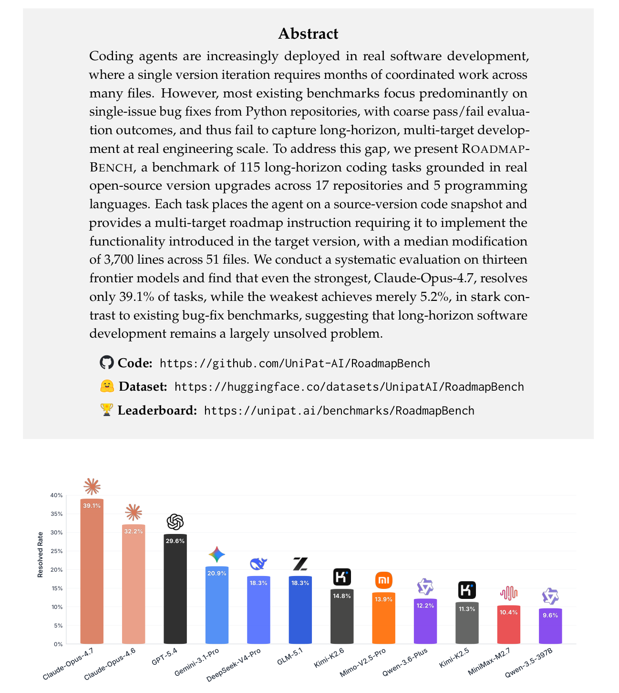
Figure 1: RoadmapBench Leaderboard. Resolved rate of top-performing models evaluated with Open- Hands across 115 multi-target software evolution tasks spanning 5 languages and 17 repositories. Even the best-performing model resolves only 39.1% of tasks.图 10 以“变更行数—变更文件数”坐标绘制全部 115 个任务。最左侧面板展示完整基准，虚线参考线取中位数（3,714 行、51 个文件）；其余 5 个面板按编程语言分面，将每种语言与完整基准对照。强正相关证实所需代码更多的任务也触及更多文件，而两个维度上跨越两个数量级的散布则体现了基准的多样性。Python 任务聚集于中等区间，并伴有个别高复杂度离群点；Go 与 Rust 任务因生成代码与宏展开而偏向高文件数。
arXiv:2605.15846v2 [cs.SE] 19 May 2026arXiv:2605.15846v2 [cs.SE] 19 May 2026
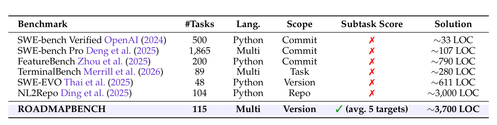
Table 1: Comparison with related coding benchmarks. Scope: task granularity. Subtask Score: target-level completion scoring. Solution: oracle patch size (LoC).
1Introduction1 引言
The rapid progress of large language models (LLMs) (Anthropic, 2026a; OpenAI, 2026; Google DeepMind, 2025) has enabled a new generation of coding agents that can plan, edit, execute, and validate software in interactive development environments (Yang et al., 2024; Zhang et al., 2024; Huang et al., 2025; Wang et al., 2025). As these agents move beyond isolated code generation and bug fixing, the central challenge increasingly lies in sustained, multi-target software development. Evaluation is therefore shifting from short-horizon defect repair to long-horizon feature implementation. This raises a critical question: how to evaluate an agent on multi-target, human-scale development work spanning weeks or months?
大语言模型（LLM）的快速进展（Anthropic, 2026a; OpenAI, 2026; Google DeepMind, 2025）催生了新一代编程智能体：它们能在交互式开发环境中规划、编辑、执行并验证软件（Yang et al., 2024; Zhang et al., 2024; Huang et al., 2025; Wang et al., 2025）。当智能体不再局限于孤立的代码生成与缺陷修复，真正的挑战便落在持续性的多目标软件开发上，评估也随之从短程缺陷修复转向长程功能实现。由此引出一个关键问题：面对跨越数周乃至数月、与人类工程实践同尺度的多目标开发，该如何评估智能体？
Existing benchmarks have not kept pace with this shift (Table 1). Most current benchmarks remain short-horizon: SWE-bench (Jimenez et al., 2024) and SWE-bench Pro (Deng et al., 2025) evaluate isolated software engineering problems, with oracle solutions of ∼33 and ∼107 lines respectively, one to two orders of magnitude below the scale of real engineering work. Long-horizon attempts remain scarce and collapse each task to a single binary outcome, overlooking the multi-target structure that real version upgrades naturally exhibit, where developers coordinate multiple substantial changes within a single release cycle. Beyond scope and granularity, existing benchmarks remain concentrated in a limited set of heavily reused Python repositories (Liu et al., 2023; Du et al., 2023), compounding contamination risk as popular codebases become more likely to appear in pre-training corpora.
现有基准尚未跟上这一转变（Table 1）。多数基准仍停留在短程层面：SWE-bench（Jimenez et al., 2024）与 SWE-bench Pro（Deng et al., 2025）评测孤立的软件工程问题，其 oracle 解分别约为 33 行和 107 行，较真实工程工作的规模低一到两个数量级。长程方面的尝试依旧稀缺，且往往把每个任务压缩为单一的二元结果，无视真实版本升级天然呈现的多目标结构——开发者需要在同一发布周期内协调多项重大变更。除范围与粒度外，现有基准还集中于少数被高度复用的 Python 仓库（Liu et al., 2023; Du et al., 2023）；热门代码库更可能进入预训练语料，污染风险因此不断加剧。
To tackle these challenges, we propose ROADMAPBENCH , a benchmark of 115 long-horizon coding tasks grounded in real open-source version upgrades. Each task starts from a repository snapshot pinned to an earlier release and requires the agent to implement the behaviors introduced in the next release, with a median oracle modification of approximately 3,700 lines across multiple files and modules. We convert each upgrade into a multi-target roadmap with a median of 5 subtasks, specifying what to implement, including API signatures, parameter semantics, default values, and exception behavior, while withholding implementation details. Each subtask is verified by its own test suite and contributes to a weighted overall score, so partial progress is captured as a continuous value rather than a binary outcome. To broaden coverage, we curate 17 repositories across 5 programming languages, spanning data processing, web frameworks, ORMs, serialization, GUI toolkits, and developer tooling, with no overlap with existing benchmarks. To ensure that failures reflect genuine capability gaps rather than benchmark artifacts, we combine static validation with attribution-driven rollout-based quality control to separate task-side defects from model-side limitations and iteratively repair confirmed task issues.
针对上述挑战，我们提出 ROADMAPBENCH——基于真实开源版本升级构建的 115 个长程编码任务。每个任务从固定于较早版本的仓库快照出发，要求智能体实现下一版本引入的行为；oracle 修改量中位数约 3,700 行，横跨多个文件与模块。每次升级被转化为含多个目标的 roadmap（子任务数中位数为 5），指明需要实现的内容——API 签名、参数语义、默认值与异常行为——但不透露实现细节。每个子任务由专属测试套件验证，并按权重计入总分，部分进展因此得以作为连续值而非二元结果被刻画。为扩大覆盖面，我们精选 5 种编程语言的 17 个仓库，涵盖数据处理、Web 框架、ORM、序列化、GUI 工具包与开发者工具，且与现有基准零重叠。为确保失败反映的是真实能力差距而非基准假象，我们以静态验证结合基于归因的 rollout 质量控制，区分任务侧缺陷与模型侧局限，并迭代修复确认的任务问题。
We evaluate thirteen frontier models on ROADMAPBENCH and observe that no model comes close to solving the benchmark. As shown in Figure 1, even the strongest model, Claude-Opus-4.7, resolves only 39.1% of tasks, while the weakest achieves merely 5.2%. By comparison, these systems attain 80%+ scores on SWE-bench Verified (OpenAI, 2024). The Completion Score reveals a consistent pattern: models routinely complete several subtasks before stalling at integration boundaries, offering cleaner separation across capability tiers than binary outcomes alone.
我们在 ROADMAPBENCH 上评测了 13 个前沿模型，结果无一接近解决该基准。如图 1 所示，即便最强的 Claude-Opus-4.7 也仅解决 39.1% 的任务，最弱者更是只有 5.2%；而同一批系统在 SWE-bench Verified（OpenAI, 2024）上均能取得 80%+ 的分数。Completion Score 揭示出一个一致模式：模型往往能完成若干子任务，随后停滞于集成边界；相比单纯的二元结果，它对跨能力层级的区分更为清晰。
In summary, our key contributions are as follows:
综上，本文的主要贡献如下：
• We construct ROADMAPBENCH, a benchmark of 115 real open-source version-upgrade tasks across 17 repositories and 5 programming languages, establishing long-horizon multi-target software develop- ment as a distinct evaluation setting.
• 我们构建了 ROADMAPBENCH——包含 115 个真实开源版本升级任务、覆盖 17 个仓库与 5 种编程语言的基准，将长程多目标软件开发确立为一个独立的评测场景。
• We develop a construction pipeline that transforms real version upgrades into multi-target tasks, and combines static validation with rollout-based quality control to separate task-side defects from genuine model limitations and iteratively repair confirmed issues.
• 我们提出一套构建流水线，将真实版本升级转化为多目标任务，并以静态验证结合基于 rollout 的质量控制，区分任务侧缺陷与真实的模型局限，同时迭代修复确认的问题。
• We evaluate thirteen frontier models and find that resolved rates range from 5.2% to 39.1%, well below performance on existing bug-fix benchmarks, while Completion Score reveals fine-grained capability differences across domains and difficulty tiers beyond binary resolved metrics.
• 我们评测了 13 个前沿模型：resolved 率介于 5.2% 至 39.1% 之间，远低于现有缺陷修复基准上的表现；Completion Score 则揭示了超越二元 resolved 指标的、跨领域与跨难度层级的细粒度能力差异。
2Related Work2 相关工作
Coding Agents. LLM-based coding agents have evolved from single-turn code generation systems to interactive software engineering agents operating in realistic development environments(Sapkota et al., 2025; Dong et al., 2025; Starace et al., 2025). OpenHands Wang et al. (2024) provides an open platform for building generalist software development agents, while Terminus 2 Merrill et al. (2026) serves as the reference agent implementation within the Harbor framework for autonomous evaluation in sandboxed environments. Commercial systems such as Claude Code Anthropic (2025) have further brought agentic coding into mainstream software development workflows. As these systems become increasingly capable, there is a growing need for benchmarks that better reflect the complexity of real- world software engineering.
编程智能体。基于 LLM 的编程智能体已从单轮代码生成系统，演进为在真实开发环境中运行的交互式软件工程智能体（Sapkota et al., 2025; Dong et al., 2025; Starace et al., 2025）。OpenHands（Wang et al. (2024)）为构建通用软件开发智能体提供了开放平台；Terminus 2（Merrill et al. (2026)）是 Harbor 框架内的参考智能体实现，用于沙盒环境中的自主评测；Claude Code（Anthropic (2025)）等商业系统则进一步将智能体式编程带入主流软件开发工作流。随着这些系统能力不断增强，能更好反映真实软件工程复杂性的基准也愈发稀缺而迫切。
Coding Benchmarks for Agents. Coding benchmarks for LLM agents have progressively evolved from function-level synthesis to more realistic software engineering tasks. HumanEval Chen et al. (2021) and MBPP Austin et al. (2021) focus on function-level code generation. The SWE-bench fam- ily Jimenez et al. (2024); OpenAI (2024); Deng et al. (2025) extends evaluation to issue resolution and long-horizon engineering tasks in real-world repositories. Later benchmarks broaden evaluation to feature-oriented development and system-level interaction, including FeatureBench Zhou et al. (2026) and TerminalBench Merrill et al. (2026). More recent work explores increasingly open-ended and long- horizon software engineering settings. NL2Repo Ding et al. (2025) evaluates full repository generation from natural language specifications without requiring agents to evolve existing large-scale codebases, while SWE-EVO Thai et al. (2025) studies Python version evolution but derives problem statements directly from release notes without explicit instruction-test alignment validation. Existing benchmarks still primarily evaluate isolated tasks rather than structured long-horizon multi-target software develop- ment processes. ROADMAPBENCH covers 17 repositories across 5 programming languages, where each instance contains around five structured subtasks together with dedicated instruction-test alignment validation. Table 1 summarizes the key differences among existing benchmarks.
面向智能体的编程基准。面向 LLM 智能体的编程基准已从函数级合成逐步演进至更真实的软件工程任务：HumanEval（Chen et al. (2021)）与 MBPP（Austin et al. (2021)）聚焦函数级代码生成；SWE-bench 家族（Jimenez et al. (2024); OpenAI (2024); Deng et al. (2025)）将评测扩展至真实仓库中的问题解决与长程工程任务；随后的基准进一步覆盖面向功能的开发与系统级交互，如 FeatureBench（Zhou et al. (2026)）与 TerminalBench（Merrill et al. (2026)）。更近期的工作则探索更加开放的长程软件工程场景：NL2Repo（Ding et al. (2025)）评测依据自然语言规格生成完整仓库，但不要求智能体在既有大规模代码库上演进；SWE-EVO（Thai et al. (2025)）研究 Python 版本演进，却直接从发布说明导出问题描述，缺乏显式的指令-测试对齐验证。总体而言，现有基准仍以孤立任务为主，而非结构化的长程多目标软件开发过程。ROADMAPBENCH 覆盖 5 种编程语言的 17 个仓库，每个实例包含约 5 个结构化子任务，并配有专门的指令-测试对齐验证。Table 1 总结了现有基准间的关键差异。
3RoadmapBench3 RoadmapBench
We describe ROADMAPBENCH across three aspects: the task definition and evaluation protocol (Sec- tion 3.1), dataset statistics (Section 3.2), and the construction pipeline (Section 3.3).
我们从三个方面介绍 ROADMAPBENCH：任务定义与评测协议（Section 3.1）、数据集统计（Section 3.2）以及构建流水线（Section 3.3）。
3.1Task Definition3.1 任务定义
As illustrated in Figure 2, each ROADMAPBENCH task asks an agent to implement the functionality introduced in a real version upgrade. The agent operates in a Docker environment with the repository pinned at the source version. It is given a multi-target roadmap instruction specifying what to implement: each target corresponds to a distinct unit of new functionality and describes the expected behavioral
如图 2 所示，每个 ROADMAPBENCH 任务要求智能体实现某次真实版本升级所引入的功能。智能体在 Docker 环境中运行，仓库固定于源版本，并获得一份多目标 roadmap 指令，指明需要实现的内容：每个目标对应一个独立的新功能单元，并描述预期的行为
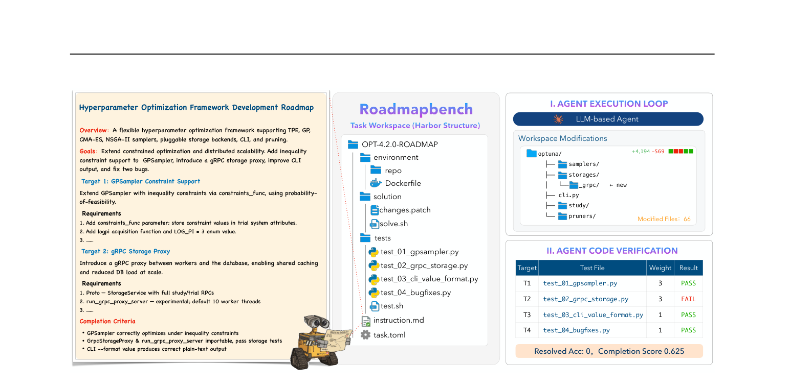
Figure 2: Overview of a ROADMAPBENCH task. The agent receives a source-version repository snapshot and a roadmap-style instruction, then implements the specified functionality inside a pinned Docker environment. Evaluation is performed via weighted subtask-level tests against behaviors introduced in the target version.
requirements. As in real version upgrades, where multiple substantial changes are coordinated within a single release, the targets collectively capture a unified development objective. We evaluate each task along two dimensions. A task is resolved if the agent passes all subtasks, providing a binary measure of complete success. To capture partial progress, we additionally compute a weighted reward: each subtask carries a weight reflecting its implementation complexity, and the reward is the weighted fraction of passed subtasks.
要求。正如真实版本升级中多项重大变更需在同一发布周期内协调完成，这些目标共同刻画了一个统一的开发目标。我们从两个维度评估每个任务：其一，若智能体通过全部子任务，则该任务记为 resolved，作为完整成功的二元度量；其二，为刻画部分进展，我们计算加权奖励——每个子任务带有反映其实现复杂度的权重，奖励值即通过子任务的加权比例。
3.2Dataset Statistics3.2 数据集统计
The current release contains 115 tasks spanning 17 open-source repositories across five programming languages (see Appendix E for details). Oracle patches range from under 300 to over 30,000 lines changed, with a median of approximately 3,700 lines and 51 files touched. Subtask counts range from 3 to 12 with a median of 5, confirming that tasks require sustained multi-target engineering rather than single-function edits. Figure 3 shows the task distribution and oracle patch size across repositories.
当前版本包含 115 个任务，覆盖 5 种编程语言的 17 个开源仓库（详见附录 E）。oracle 补丁的变更量从不足 300 行到超过 30,000 行不等，中位数约为 3,700 行、涉及 51 个文件；子任务数在 3 至 12 之间，中位数为 5——这印证了这些任务需要持续的多目标工程，而非单函数级别的修改。图 3 展示了各仓库的任务分布与 oracle 补丁规模。
3.3Data Construction Pipeline3.3 数据构建流水线
The pipeline proceeds in four stages (Figure 4): repository mining, task construction, static validation, and rollout-based quality control.
该流水线分四个阶段进行（图 4）：仓库挖掘、任务构建、静态验证与基于 rollout 的质量控制。
Stage 1: Repository Mining. We aggregate repositories from community-curated open-source project lists across five languages and apply a three-stage filter: (1) a rule-based filter retains repositories with at least 1,000 stars, five or more tagged releases, and continued release activity through 2025; (2) an in-depth search identifies repositories that maintain high-quality release documentation (see examples in Appendix G.1); (3) expert review verifies documentation quality and selects consecutive version pairs with sufficient code changes and feature narratives for task construction. This process yields 17 repositories and 115 version pairs across five languages.
阶段 1：仓库挖掘。我们从五种语言社区维护的开源项目列表中聚合仓库，并施加三阶段过滤：(1) 基于规则的过滤保留至少 1,000 stars、拥有 5 个及以上带标签发布、且发布活动延续至 2025 年的仓库；(2) 深入检索甄别维护高质量发布文档的仓库（示例见附录 G.1）；(3) 专家评审核验文档质量，并选取代码变更充足、功能叙述完备的连续版本对用于任务构建。该过程最终产出 5 种语言的 17 个仓库与 115 个版本对。
Stage 2: Task Construction. Each task is built in a Docker environment pinned to the source version. The git history is preserved but all branches and tags beyond the source release are pruned, preventing the agent from inspecting target-version code through version control. We align source-to-target code
阶段 2：任务构建。每个任务在固定于源版本的 Docker 环境中构建。git 历史得以保留，但源版本之后的所有分支与标签均被剪除，以防智能体经由版本控制窥见目标版本的代码。我们将源版本到目标版本的代码
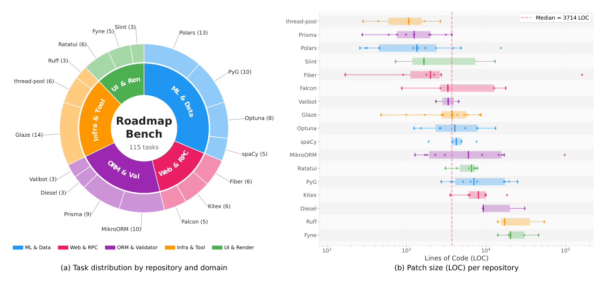
Figure 3: Dataset overview of ROADMAPBENCH. (a) Task count per repository (outer ring) grouped by domain (inner ring): ML & Data (36), Web & RPC (17), ORM & Val (25), Infra & Tool (23), UI & Ren (14). (b) Distribution of ground-truth patch size (lines changed) per repository, where the dashed line marks the overall median of 3,714 LOC.
diffs with release narratives to identify externally visible behavioral changes and create a multi-target roadmap instruction (instruction.md) specifying what to implement without revealing how. Tests are adapted from upstream suites to preserve behavioral coverage, and a gold patch is extracted from the code diff, refined against the task environment, and validated until it passes the adapted tests.
差异与发布说明进行对齐，以识别外部可见的行为变化，进而创建多目标 roadmap 指令（instruction.md）——只说明要实现什么，不透露如何实现。测试改编自上游测试套件以保留行为覆盖；gold patch 则从代码差异中提取，经任务环境调优与验证，直至通过改编后的测试。
Stage 3: Static Validation. Each task is statically checked along two dimensions: compliance, verifying specification self-containedness, source traceability, and test validity; and target-level correctness, ensuring that every tested behavior for each target is specified and no test relies on unstated assumptions (details in Appendix G.2). Confirmed issues are repaired; the oracle patch is then re-run to ensure the fail-to-pass guarantee remains valid.
阶段 3：静态验证。每个任务沿两个维度接受静态检查：其一是合规性，验证规格的自含性、来源可追溯性与测试有效性；其二是目标级正确性，确保每个目标的全部被测行为均已在规格中写明，且没有任何测试依赖未声明的假设（细节见附录 G.2）。确认的问题会被修复；随后重跑 oracle 补丁，以确保 fail-to-pass 保证依然成立。
Stage 4: Rollout-based quality control. Agents from three capability tiers attempt each task; failures are attributed to either task-side defects (missing/ambiguous specifications) or genuine model limitations (incorrect design, buggy implementation). Task-side defects are iteratively repaired and revalidated until cleared. A task is finalized only when it contains no task-side errors, the oracle achieves full reward, and models of different tiers produce distinguishable scores (see Appendix G.3).
阶段 4：基于 rollout 的质量控制。来自三个能力层级的智能体分别尝试每个任务；失败被归因于任务侧缺陷（规格缺失或含糊）或真实的模型局限（设计错误、实现有缺陷）。任务侧缺陷经迭代修复与重新验证，直至彻底清除。只有当任务不含任务侧错误、oracle 取得满奖励、且不同层级模型产出可区分的分数时，该任务才最终定稿（见附录 G.3）。
4Experiments4 实验
4.1Evaluation Setup4.1 评测设置
Models. We evaluate thirteen frontier models: Claude-Opus-4.7 Anthropic (2026b), Claude-Opus- 4.6 Anthropic (2026a), GPT-5.4 OpenAI (2026), Gemini-3.1-Pro Google DeepMind (2026), DeepSeek-V4- Pro DeepSeek-AI (2026), GLM-5.1 GLM-5-Team (2026), Kimi-K2.6 MiniMax (2026a), Mimo-V2.5-Pro Xi- aoMi (2026), Qwen3.6-Plus Qwen Team (2026a), Kimi-K2.5 Kimi Team (2026), MiniMax-M2.7 MiniMax (2026b), Qwen3.5-397B Qwen Team (2026b), and Seed-2.0-Pro ByteDance Seed Team (2026). These models span multiple commercial API providers and cover a wide range of current capability tiers.
模型。我们评测 13 个前沿模型：Claude-Opus-4.7（Anthropic (2026b)）、Claude-Opus-4.6（Anthropic (2026a)）、GPT-5.4（OpenAI (2026)）、Gemini-3.1-Pro（Google DeepMind (2026)）、DeepSeek-V4-Pro（DeepSeek-AI (2026)）、GLM-5.1（GLM-5-Team (2026)）、Kimi-K2.6（MiniMax (2026a)）、Mimo-V2.5-Pro（XiaoMi (2026)）、Qwen3.6-Plus（Qwen Team (2026a)）、Kimi-K2.5（Kimi Team (2026)）、MiniMax-M2.7（MiniMax (2026b)）、Qwen3.5-397B（Qwen Team (2026b)）与 Seed-2.0-Pro（ByteDance Seed Team (2026)）。这些模型来自多家商业 API 提供商，覆盖当前广泛的能力层级。
Agent scaffold. All tasks are packaged as Harbor Harbor Framework Team (2026) environments and can be evaluated with any Harbor-compatible agent. We use OpenHands Wang et al. (2024) as the
Agent 脚手架。所有任务均打包为 Harbor（Harbor Framework Team (2026)）环境，可由任何兼容 Harbor 的智能体评测。我们以 OpenHands（Wang et al. (2024)）作为
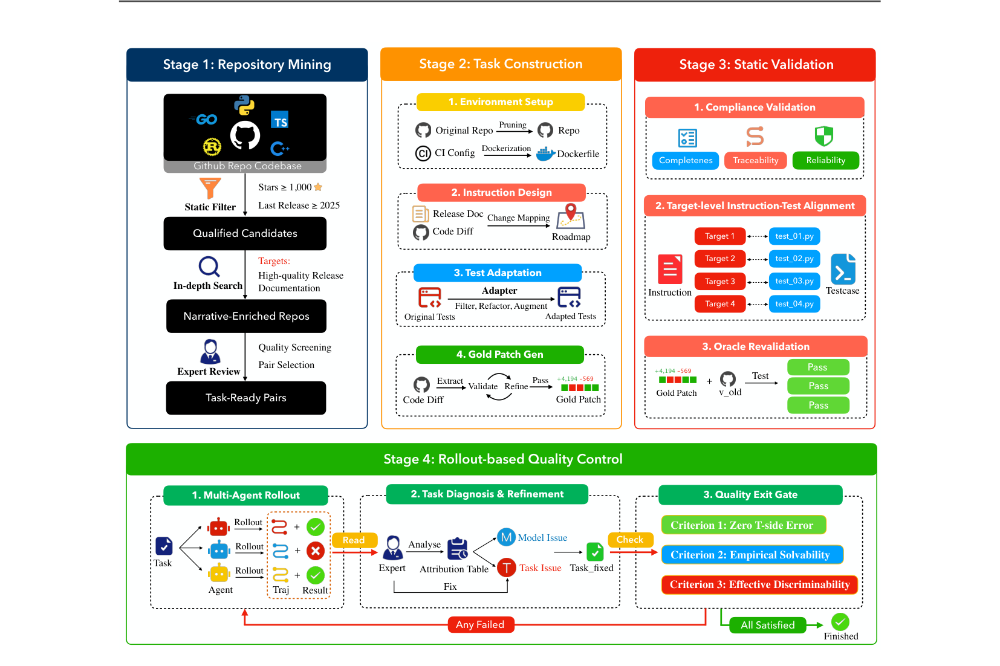
Figure 4: ROADMAPBENCH construction pipeline. Repository mining selects task-ready version pairs; task construction aligns release narratives with code diffs to create instructions and tests. Static validation and rollout-based quality control repair task-side defects before benchmark inclusion.
primary scaffold for all thirteen models. Each rollout runs inside a pinned Docker environment rooted at the source version. The agent may inspect and modify the repository but has no access to target-version code, test files, or the oracle patch. Future branches and upstream repository access are blocked to prevent information leakage. As an ablation, we additionally evaluate a subset of models under Terminus 2, the reference agent implementation of Harbor. Terminus 2 is designed as a neutral testing platform that runs fully autonomously in sandboxed environments, making it well suited for measuring scaffold sensitivity independent of any production-oriented design choices in OpenHands.
全部 13 个模型的主脚手架。每次 rollout 都在固定于源版本的 Docker 环境中运行：智能体可查看和修改仓库，但无法访问目标版本代码、测试文件或 oracle 补丁；未来分支与上游仓库访问均被屏蔽，以防信息泄露。作为消融实验，我们还在 Terminus 2（Harbor 的参考智能体实现）下额外评测了一部分模型。Terminus 2 定位为中立的测试平台，可在沙盒环境中完全自主运行，因此适合在不受 OpenHands 面向生产的设计选择干扰的情况下度量脚手架敏感性。
Inference configuration. Each task is allocated a 2-hour wall-clock budget. All models are evaluated with extended thinking enabled. For models that support configurable reasoning depth, we set reasoning effort to high for GPT-5.4, Gemini-3.1-Pro, DeepSeek-V4-Pro, and Seed-2.0-Pro, and xhigh for Claude- Opus-4.7; the remaining models use their default thinking mode.
推理配置。每个任务分配 2 小时墙钟时间预算；所有模型均在启用扩展思考（extended thinking）的设置下评测。对支持可配置推理深度的模型，我们将 GPT-5.4、Gemini-3.1-Pro、DeepSeek-V4-Pro 与 Seed-2.0-Pro 的推理力度（reasoning effort）设为 high，将 Claude-Opus-4.7 设为 xhigh；其余模型沿用默认思考模式。
Metrics. For task t with Kt subtasks, each subtask k carries a weight wt,k reflecting its relative complexity and yields a binary pass/fail result rt,k ∈{0, 1}. We define the per-task weighted reward as
指标。对含 Kt 个子任务的任务 t，每个子任务 k 带有权重 wt,k 以反映其相对复杂度，并产生二元通过/失败结果 rt,k ∈{0, 1}。每任务加权奖励定义为
st = ∑Ktst = ∑Kt
k=1 wt,k · rt,kk=1 wt,k · rt,k
∑Kt∑Kt
k=1 wt,kk=1 wt,k
We report two primary metrics over N tasks: one for full task completion and one for partial progress. Resolved rate is the fraction of fully completed tasks: RR = 1
我们在 N 个任务上报告两个主要指标：其一衡量完整任务完成，其二衡量部分进展。Resolved rate（解决率）为完全完成任务所占比例：RR = 1
N ∑t 1[st = 1]. Completion Score averages st
N ∑t 1[st = 1]。Completion Score 则对 st 取平均
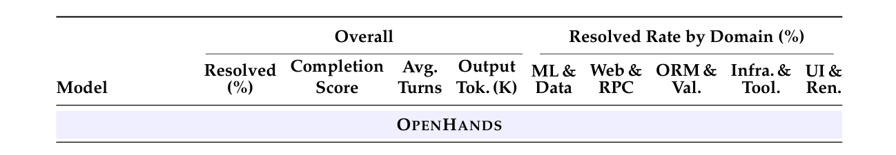
Table 2: Main results on ROADMAPBENCH across 115 tasks, using a single trial per model. Domain columns report resolved rates (%). Task counts are ML & Data (36), Web & RPC (17), ORM & Val. (25), Infra. & Tool. (23), and UI & Ren. (14). Bold and underline denote the best and second-best domain-level results within each scaffold.Table 2 报告了 13 个前沿模型在 OpenHands 下的 resolved rate、Completion Score、平均轮次数及各领域 resolved rate，并附列一部分模型的 Terminus 2 结果以供对比；详细的脚手架敏感性分析见 §5.4。
to credit partial completions: CS = 1以计入部分完成：CS = 1
N ∑t st. We also report Avg. turns, the mean number of agent turns per task, and Output Tok., the average output tokens generated per task (in thousands), as indicators of interaction cost and computational effort.
N ∑t st。我们还报告 Avg. turns（每任务的平均智能体轮次数）与 Output Tok.（每任务生成的平均输出 token 数，以千计），作为交互成本与计算开销的指示指标。
4.2Main Results4.2 主要结果
Table 2Table 2 报告了 13 个前沿模型在 OpenHands 下的 resolved rate、Completion Score、平均轮次数及各领域 resolved rate，并附列一部分模型的 Terminus 2 结果以供对比；详细的脚手架敏感性分析见 §5.4。
| Overall Resolved Rate by Domain (%) | |
|---|---|
| Resolved Completion Avg. Output ML & Web & ORM & Infra. & UI & | |
| Model | (%) Score Turns Tok. (K) Data RPC Val. Tool. Ren. |
| l d | OPENHANDS |
Overall performance. Current frontier models remain far from solving ROADMAPBENCH. Under OpenHands, Claude-Opus-4.7 achieves the highest resolved rate at 39.1%, followed by Claude-Opus- 4.6 at 32.2% and GPT-5.4 at 29.6%. The remaining ten models range from 5.2% to 20.9%, indicating a
整体性能。当前前沿模型距解决 ROADMAPBENCH 仍相去甚远。在 OpenHands 下，Claude-Opus-4.7 以 39.1% 的 resolved rate 居首，Claude-Opus-4.6（32.2%）与 GPT-5.4（29.6%）分列其后；其余 10 个模型介于 5.2% 至 20.9% 之间，表明
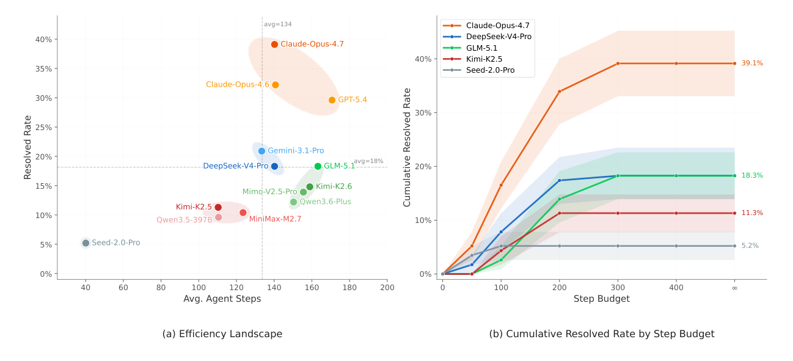
Figure 5: Efficiency and step-budget analysis. (a) Efficiency landscape of resolved rate versus average agent steps. Dashed lines mark fleet means, and shaded ellipses indicate performance tiers. (b) Cumu- lative resolved rate under increasing per-task step budgets, showing how models convert additional compute into task resolution.图 5(b) 展示了累计 resolved rate 随每任务步骤预算增加的变化。多数模型在前 200 步内即趋饱和，此后额外预算的收益有限；最强的 Claude-Opus-4.7 是主要例外，其后仍持续改进，并在满预算时达到 39.1%。在中层模型中，DeepSeek-V4-Pro 与 GLM-5.1 的最终 resolved rate 相近，但扩展轨迹不同：DeepSeek-V4-Pro 更早进入平台期，步骤效率更高；GLM-5.1 则需要更大预算才能逼近同一水平。这些趋势表明，只有当模型能有效把更长的轨迹转化为成功编辑时，追加步骤才有价值。
substantial gap between the strongest models and the rest. Completion Score highlights that partial progress is common. It is consistently higher than resolved rate across models, showing that agents often complete some roadmap targets before failing to solve the full task. For example, Claude-Opus-4.6 resolves 32.2% of tasks but obtains a Completion Score of 0.627, while Seed-2.0-Pro resolves 5.2% yet reaches 0.177. This suggests that failures often occur after partial progress, when agents stall on later targets, integration, or correctness.
最强模型与其余模型之间存在显著落差。Completion Score 突显出部分进展是普遍现象：它在所有模型上一致高于 resolved rate，说明智能体往往在无法解决完整任务之前已完成若干 roadmap 目标。例如，Claude-Opus-4.6 解决了 32.2% 的任务，Completion Score 达 0.627；Seed-2.0-Pro 仅解决 5.2%，Completion Score 却仍有 0.177。这表明失败常发生在取得部分进展之后——智能体在后续目标、集成或正确性上陷入停滞。
Domain difficulty. Performance varies substantially across domains. ML & Data is the most challenging: six of thirteen models resolve no tasks, and only the top three exceed 8%. ORM & Validation is relatively more tractable, likely due to the structured nature of schema migration and validation APIs. UI & Rendering shows the sharpest separation across capability tiers, with Claude-Opus-4.7 reaching 64.3% and Claude-Opus-4.6 reaching 57.1%, while weaker models remain much lower. Web & RPC and Infra. & Tooling fall between these extremes, reflecting intermediate levels of domain structure and integration complexity.
领域难度。性能在领域间差异显著。ML & Data 最具挑战性：13 个模型中有 6 个无一解决，仅前 3 名超过 8%。ORM & Validation 相对更易处理，这可能得益于 schema 迁移与验证 API 的结构化特性。UI & Rendering 在各能力层级间呈现出最陡峭的区分：Claude-Opus-4.7 达到 64.3%，Claude-Opus-4.6 达到 57.1%，而较弱模型仍远低于此。Web & RPC 与 Infra. & Tooling 则介于两个极端之间，反映出中等水平的领域结构与集成复杂度。
5Analysis5 分析
We decompose performance along six aspects: Step Efficiency and Compute Scaling (§5.1), capturing how much trajectory budget is consumed per resolved task; Tool Composition and Usage Distribution (§5.2), capturing how that budget is allocated across different intents; Task Complexity and Perfor- mance (§5.3), examining how complexity affects resolution; Scaffold Sensitivity (§5.4), comparing agent frameworks; Target-Level Analysis (§5.5), stratifying by change type and difficulty; and Failure Mode Analysis (§5.6), characterizing where unsuccessful trajectories break down.
我们从六个方面分解性能：步骤效率与计算规模扩展（§5.1），衡量每个已解决任务消耗多少轨迹预算；工具构成与使用分布（§5.2），考察该预算在不同意图间如何分配；任务复杂度与性能（§5.3），检验复杂度对解决情况的影响；脚手架敏感性（§5.4），比较不同的智能体框架；目标级分析（§5.5），按变更类型与难度分层；失败模式分析（§5.6），刻画失败的轨迹在何处崩解。
5.1Step Efficiency and Compute Scaling5.1 步骤效率与计算规模扩展
To characterize behavioral patterns and step efficiency across models, Figure 5(a) plots average agent steps against resolved rate, with dashed lines marking the fleet averages of 134 steps and 18%. The models separate into distinct regimes. Frontier models, including Claude-Opus-4.7, Claude-Opus-4.6, and GPT-5.4, achieve 30% to 39% resolved rates with moderate to high step budgets. By contrast, models such as GLM-5.1 and Kimi-K2.6 consume comparable or larger budgets but remain near the mid-performance
为刻画跨模型的行为模式与步骤效率，图 5(a) 绘出平均智能体步骤数对 resolved rate 的关系，虚线标出全体平均值 134 步与 18%。模型呈现出不同的区隔：包括 Claude-Opus-4.7、Claude-Opus-4.6 与 GPT-5.4 在内的前沿模型，以中到高的步骤预算取得 30% 至 39% 的 resolved rate；相比之下，GLM-5.1 与 Kimi-K2.6 等模型消耗相当甚至更大的预算，却停留在中等性能
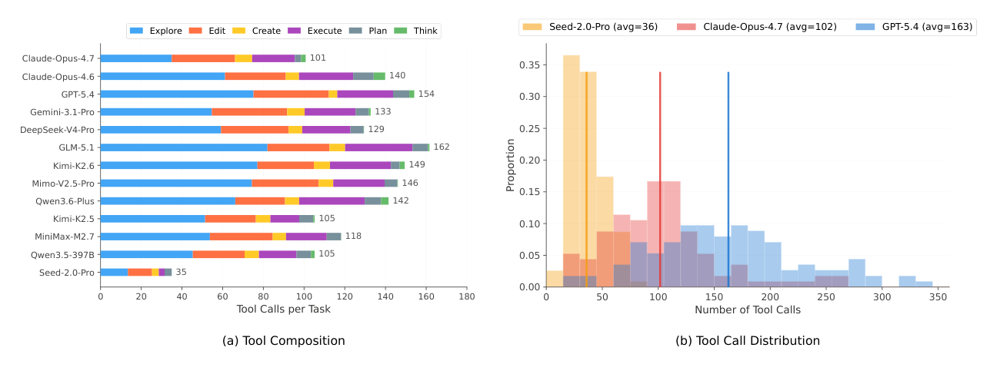
Figure 6: Tool usage analysis. (a) Tool composition by model, decomposed into six intent categories and sorted by resolved rate. (b) Distribution of per-task tool call counts for three representative models spanning the full performance range: Seed-2.0-Pro (5%), Claude-Opus-4.7 (39%), and GPT-5.4 (30%). Vertical lines indicate mean values.图 6(b) 比较了三个代表性模型的每任务工具调用分布。Seed-2.0-Pro
region, indicating lower step efficiency. This contrast is particularly clear for Claude-Opus-4.7 and GLM-5.1, which use similar average budgets, 140 and 163 steps respectively, yet differ by more than 20 percentage points in resolved rate. Seed-2.0-Pro appears as a low-compute, low-performance outlier, suggesting premature termination or limited repository interaction.
区间，说明其步骤效率较低。这一对比在 Claude-Opus-4.7 与 GLM-5.1 上尤为鲜明：两者平均预算相近（分别为 140 步与 163 步），resolved rate 却相差 20 多个百分点。Seed-2.0-Pro 则表现为低计算、低性能的离群点，提示其过早终止或仓库交互不足。
5.2Tool Composition and Usage Distribution5.2 工具构成与使用分布
We classify each tool invocation into six intent-based categories derived from the OpenHands agent’s action space. Explore encompasses file viewing (str_replace_editor view) and shell-based search or inspection commands (e.g., grep, find, cat); Edit covers in-place code modifications (str_replace_ editor str_replace) and shell editing commands; Create captures new file creation (str_replace_ editor create/insert); Execute includes compilation, testing, dependency installation, and other shell executions; Plan corresponds to explicit task planning via the built-in task tracker; and Think represents deliberate reasoning steps. Terminal actions (e.g., task completion) and tool misuse are excluded.
我们将每次工具调用归入六个基于意图的类别，类别源自 OpenHands 智能体的动作空间。Explore 涵盖文件查看（str_replace_editor view）与基于 shell 的搜索或检查命令（如 grep、find、cat）；Edit 覆盖就地代码修改（str_replace_editor str_replace）与 shell 编辑命令；Create 对应新文件创建（str_replace_editor create/insert）；Execute 包括编译、测试、依赖安装及其他 shell 执行；Plan 指经由内置任务跟踪器进行的显式任务规划；Think 表示刻意的推理步骤。终端动作（如任务完成）与工具误用不计入内。
As shown in Figure 6(a), Explore, Edit, and Execute dominate tool usage across all models, corresponding to repository inspection, code modification, and validation. The main difference across models is not the amount of tool use, but how tool calls are allocated across the development process. Claude-Opus-4.7 achieves the highest resolved rate with only 101 tool calls per task on average and the lowest Explore ratio at 35%. In contrast, GLM-5.1 and Kimi-K2.6 use substantially more tool calls, but spend over half of them on exploration. This suggests that strong models localize relevant code more efficiently and shift earlier from exploration to targeted editing and execution-based validation. Explicit Plan and Think calls remain sparse for most models, indicating that the observed trajectories are driven mainly by iterative exploration, editing, and execution rather than dedicated reasoning-oriented tool actions.
如图 6(a) 所示，Explore、Edit 与 Execute 在所有模型的工具使用中占据主导，分别对应仓库检查、代码修改与验证。模型间的主要差异不在工具使用量的多寡，而在工具调用于开发过程中的分配方式。Claude-Opus-4.7 以每任务平均仅 101 次工具调用取得最高的 resolved rate，且 Explore 占比最低（35%）；相比之下，GLM-5.1 与 Kimi-K2.6 的工具调用多得多，却有一半以上耗在探索上。这表明强模型能更高效地定位相关代码，并更早从探索转向有针对性的编辑与基于执行的验证。显式的 Plan 与 Think 调用在多数模型中依旧稀少，说明观测到的轨迹主要由迭代式的探索、编辑和执行驱动，而非专门的面向推理的工具动作。
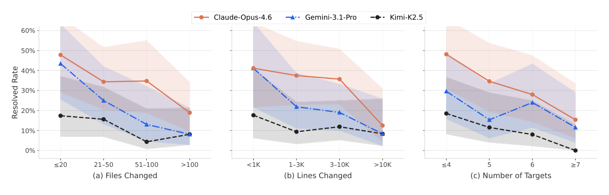
Figure 7: Resolved rate vs. three task complexity proxies (binned rate ± 95% Wilson CI). (a) Files changed, (b) lines changed, and (c) number of targets are all strong predictors of task difficulty, with monotonically decreasing resolved rates as complexity increases.
uses only 36 tool calls on average and obtains a low resolved rate, suggesting insufficient repository interaction. GPT-5.4 uses 163 tool calls on average, indicating much longer trajectories. Claude-Opus-4.7 reaches the best resolved rate with an intermediate average of 102 tool calls. Overall, these results indicate that task success is better characterized by the allocation of tool use across exploration, editing, planning, and execution than by raw tool-call volume alone.
平均只使用 36 次工具调用，resolved rate 偏低，说明其仓库交互不足；GPT-5.4 平均使用 163 次工具调用，表明轨迹长得多；Claude-Opus-4.7 则以平均 102 次的中等水平取得最佳 resolved rate。总体而言，任务成功与否更多取决于工具使用在探索、编辑、规划与执行之间的分配，而非单纯的调用总量。
5.3Task Complexity and Performance5.3 任务复杂度与性能
Resolved rate declines consistently as task complexity increases across all three structural proxies (Fig- ure 7). Files changed (a) shows the clearest model separation: stronger models hold up longer as file count grows, while weaker models fall off early, with Gemini dropping from 43% to 8% across the full range—a steeper decline than Claude’s 48% to 19%. Code volume (b) reveals a more nuanced pattern: on simpler tasks (under 1K lines), Claude and Gemini start at similar levels (∼41%), but Claude maintains a clear advantage through mid-range complexity while Gemini drops sharply in the intermediate bins; at the hardest end (>10K lines), both converge near the floor, suggesting extreme complexity is a ceiling even for the strongest models. Subtask count (c) amplifies this dynamic most dramatically: Kimi-K2.5 collapses to 0% at 7 or more subtasks while Claude still resolves 15%, making it the sharpest discriminator among the three proxies. Together, these results confirm that structural complexity is an effective performance discriminator, with the sharpest separation occurring in the mid-range where model capabilities diverge most.
在全部三个结构性代理指标上，resolved rate 均随任务复杂度上升而持续下降（图 7）。变更文件数（a）的模型区分最为清晰：文件数增长时，较强模型坚持得更久，较弱模型则早早滑落——Gemini 在整个范围内从 43% 跌至 8%，降幅比 Claude 的 48%→19% 更陡。代码量（b）揭示出更细致的模式：在较简单的任务（1K 行以下）上，Claude 与 Gemini 起点相近（约 41%）；进入中等复杂度区间后，Claude 仍保持明显优势，Gemini 却在中间分箱急剧下滑；到最难一端（>10K 行），两者都收敛至谷底附近，说明极端复杂度即便对最强模型也是天花板。子任务数（c）最显著地放大了这一动态：Kimi-K2.5 在 7 个及以上子任务时跌至 0%，Claude 仍能解决 15%，使其成为三个代理指标中最锐利的区分器。综合来看，这些结果证实结构复杂度是有效的性能区分指标，最陡峭的分离出现在模型能力分化最明显的中段区间。
5.4Scaffold Sensitivity5.4 脚手架敏感性
Performance varies across scaffolds for most models, but the direction and magnitude differ by capability tier. Three patterns emerge from Table 2.
对多数模型而言，性能在不同脚手架之间确有差异，但方向与幅度因能力层级而异。Table 2 呈现出三种模式。
Top models are scaffold-robust. Claude-Opus-4.6 achieves 31.3% on Terminus 2 and 32.2% on Open- Hands, a difference of 0.9 percentage points. Mid- and lower-tier models show larger swings of 3 to 10 percentage points across scaffolds.
顶级模型对脚手架具备稳健性：Claude-Opus-4.6 在 Terminus 2 上为 31.3%，在 OpenHands 上为 32.2%，仅相差 0.9 个百分点。中低层级模型则在脚手架之间波动更大，达 3 至 10 个百分点。
OpenHands yields higher performance for most models. The majority of evaluated models perform better under OpenHands. The gains are largest for DeepSeek-V4-Pro (+7.9 pp) and MiniMax-M2.7 (+6.1 pp). OpenHands provides explicitly typed tool schemas with clear argument names, which reduces the effort required to select and format each tool call correctly.
OpenHands 为多数模型带来更高性能：多数被评测模型在 OpenHands 下表现更佳，其中 DeepSeek-V4-Pro（+7.9 pp）与 MiniMax-M2.7（+6.1 pp）增益最大。OpenHands 提供参数名清晰的显式类型化工具模式，降低了正确选择与格式化每次工具调用所需的开销。
Two models perform better on Terminus 2. GLM-5.1 and Qwen3.6-Plus are the only exceptions, with resolved rates 2.6 pp and 4.3 pp higher on Terminus 2. Terminus 2 requires the agent to batch multiple
两个模型在 Terminus 2 上表现更佳：GLM-5.1 与 Qwen3.6-Plus 是仅有的例外，其 resolved rate 在 Terminus 2 上分别高出 2.6 pp 与 4.3 pp。Terminus 2 要求智能体把多条
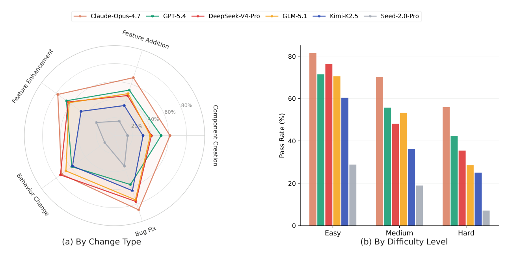
Figure 8: Subtask pass rate for six representative models. (a) By change type. (b) By difficulty level.图 8 按变更类型与难度级别分解了六个代表性模型的性能。面板（a）显示，强弱模型的差距在 Component Creation 与 Feature Addition 上最为显著：Claude 保持在 50% 以上，Seed-2.0-Pro 则跌破 25%。面板（b）显示，在 Hard 子任务上，Claude 维持 53%，DeepSeek 降至 43%，Seed-2.0-Pro 降至 16%，印证难度会放大模型间差距。
commands into a single structured JSON response per turn, a format these two models handle more effectively than the one-action-per-turn interface of OpenHands.
命令批量打包为每轮一个结构化 JSON 响应——这两个模型对这种格式的处理优于 OpenHands 的每轮单动作接口。
5.5Target-Level Analysis5.5 目标级分析
We classify subtasks into five change types: Component Creation, Feature Addition, Feature Enhancement, Behavior Change, and Bug Fix. A clear difficulty gradient emerges: average pass rate rises from 36% (Component Creation) to 64% (Bug Fix), confirming that designing new abstractions and multi-file coordination is substantially harder than locating and correcting specific defects.
我们将子任务划分为五种变更类型：Component Creation、Feature Addition、Feature Enhancement、Behavior Change 与 Bug Fix。清晰的难度梯度由此浮现：平均通过率从 36%（Component Creation）升至 64%（Bug Fix），印证设计新抽象与多文件协调远比定位并修正特定缺陷困难。
5.6Failure Mode Analysis5.6 失败模式分析
We perform root-cause analysis on 3,603 failed subtasks across thirteen models using Claude-Sonnet-4.6 as an agentic classifier. We categorize failures into five types. Implementation Error refers to code that compiles but exhibits incorrect behavior. Build Error denotes solutions that fail to compile or link. Missing Implementation captures cases where required functionality is absent. Interface Mismatch covers incorrect API signatures or export paths. Agent Failure refers to cases where the agent abandons the task or exhausts its budget.
我们以 Claude-Sonnet-4.6 作为智能体分类器，对 13 个模型的 3,603 个失败子任务进行根因分析，并将失败划分为五类：Implementation Error 指代码可编译但行为不正确；Build Error 指无法编译或链接的方案；Missing Implementation 指所需功能缺失；Interface Mismatch 涵盖 API 签名或导出路径不正确；Agent Failure 指智能体放弃任务或耗尽预算。
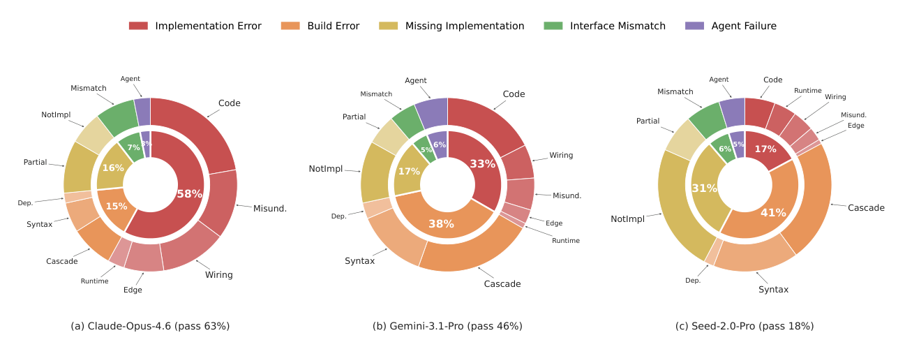
Figure 9: Error distribution for three representative models. Inner ring: category proportions; outer ring: sub-type breakdown. The dominant failure mode shifts from Implementation Error (strong models) to Build Error (weak models).图 9 揭示了失败模式随能力变化的转变。性能更高的模型较少受构建层级错误（如构建失败或功能缺失）的阻碍，其失败更多集中于实现层级的正确性。以 Claude-Opus-4.6 为例，58% 的失败属于 Implementation Error，表明该模型通常能产出完整且可构建的代码，但仍会在行为正确性上失手。这些错误又以 Code Defect、Misunderstanding 与 Wiring Error 为主，说明前沿瓶颈在于执行精度——包括细微的逻辑错误、需求误读与组件集成。Gemini-3.1-Pro 则呈现过渡性特征：Build Error 与 Implementation Error 占比相当，分别为 38%
and 33%, respectively. Seed-2.0-Pro is dominated by earlier construction failures, with Build Error and Missing Implementation accounting for 41% and 31% of failures. This pattern indicates that, as model capability decreases, the primary bottleneck shifts from implementing the correct behavior to producing complete and buildable code.
和 33%。Seed-2.0-Pro 则以更早的构建失败为主，Build Error 与 Missing Implementation 分别占失败的 41% 和 31%。这一模式表明，随着模型能力下降，主要瓶颈从“实现正确行为”转向“产出完整且可构建的代码”。
6Conclusion6 结论
ROADMAPBENCH introduces a new evaluation axis for coding agents: multi-target, long-horizon software development across real version upgrades. Each task requires agents to interpret roadmap specifications, coordinate multi-file changes, and implement coherent feature sets. Across 115 tasks from 17 repositories and 5 programming languages, current models remain far from solving this setting. Under OpenHands, Claude-Opus-4.7 resolves only 39.1% of tasks, while Seed-2.0-Pro resolves 5.2%. Completion Score shows that partial progress is common: agents often complete a subset of roadmap targets before failing on integration, correctness, or construction-level reliability. Domain-level results further show uneven difficulty, with ML & Data being the most challenging, ORM & Validation relatively more tractable, and UI & Rendering exhibiting a large gap between frontier and weaker models. Our analysis indicates that stronger models more efficiently localize relevant code and convert exploration into targeted edits, whereas weaker models often fail earlier through build errors or missing implementations. These results position ROADMAPBENCH as a diagnostic benchmark for measuring sustained software development capability beyond isolated issue resolution.
ROADMAPBENCH 为编程智能体开辟了一个新的评测维度：跨真实版本升级的多目标长程软件开发。每个任务要求智能体解读 roadmap 规格、协调多文件变更并实现连贯的功能集合。在来自 17 个仓库、5 种编程语言的 115 个任务上，当前模型距解决这一场景仍相去甚远：在 OpenHands 下，Claude-Opus-4.7 仅解决 39.1% 的任务，Seed-2.0-Pro 仅 5.2%。Completion Score 表明部分进展是普遍现象——智能体往往在集成、正确性或构建层可靠性上折戟之前，已完成一部分 roadmap 目标。领域级结果进一步显示难度分布不均：ML & Data 最具挑战性，ORM & Validation 相对更易处理，UI & Rendering 则在前沿模型与较弱模型之间呈现巨大落差。我们的分析表明，更强的模型能更高效地定位相关代码，并把探索转化为有针对性的编辑；较弱的模型则往往更早因构建错误或实现缺失而失败。这些结果使 ROADMAPBENCH 成为诊断性基准，用以衡量孤立问题解决之外的持续软件开发能力。
References参考文献
OpenAI. SWE-bench Verified. Technical report, OpenAI, 2024.
[REF] 原样保留英文文献列表
Xiang Deng, Jeff Da, Edwin Pan, Yannis Yiming He, Charles Ide, Kanak Garg, Niklas Lauffer, Andrew
[REF] 原样保留英文文献列表
Park, Nitin Pasari, Chetan Rane, et al. Swe-bench pro: Can ai agents solve long-horizon software engineering tasks? arXiv preprint arXiv:2509.16941, 2025.
[REF] 原样保留英文文献列表
Qixing Zhou, Jiacheng Zhang, Haiyang Wang, et al. FeatureBench: Benchmarking agentic coding for
[REF] 原样保留英文文献列表
complex feature development. arXiv preprint arXiv:2602.10975, 2025.
[REF] 原样保留英文文献列表
Mike A. Merrill, Alexander G. Shaw, Nicholas Carlini, Boxuan Li, Harsh Raj, Ivan Bercovich, Lin Shi,
[REF] 原样保留英文文献列表
Jeong Yeon Shin, Thomas Walshe, E. Kelly Buchanan, Junhong Shen, Guanghao Ye, Haowei Lin, Jason
[REF] 原样保留英文文献列表
Poulos, Maoyu Wang, Marianna Nezhurina, Jenia Jitsev, Di Lu, et al. Terminal-bench: Benchmarking agents on hard, realistic tasks in command line interfaces, 2026.
[REF] 原样保留英文文献列表
Minh VT Thai, Tue Le, Dung Nguyen Manh, Huy Phan Nhat, and Nghi DQ Bui. Swe-evo: Benchmarking
[REF] 原样保留英文文献列表
coding agents in long-horizon software evolution scenarios. arXiv preprint arXiv:2512.18470, 2025.
[REF] 原样保留英文文献列表
Jingzhe Ding, Shengda Long, Changxin Pu, et al. NL2Repo-Bench: Towards long-horizon repository
[REF] 原样保留英文文献列表
generation evaluation of coding agents. arXiv preprint arXiv:2512.12730, 2025.
[REF] 原样保留英文文献列表
Anthropic. Claude opus 4.6. Anthropic Blog Post, 2026a. https://www.anthropic.com/claude.
[REF] 原样保留英文文献列表
OpenAI. Introducing gpt-5.4. OpenAI Blog Post, 2026. https://openai.com/index/ introducing-gpt-5-4/.
[REF] 原样保留英文文献列表
Google DeepMind. Gemini 3 flash model card. https://storage.googleapis.com/deepmind-media/
[REF] 原样保留英文文献列表
Model-Cards/Gemini-3-Flash-Model-Card.pdf, 2025.[REF] 原样保留英文文献列表
John Yang, Carlos E Jimenez, Alexander Wettig, Kilian Lieret, Shunyu Yao, Karthik Narasimhan, and
[REF] 原样保留英文文献列表
Ofir Press. Swe-agent: Agent-computer interfaces enable automated software engineering. Advances in Neural Information Processing Systems, 37:50528–50652, 2024.
[REF] 原样保留英文文献列表
Kechi Zhang, Jia Li, Ge Li, Xianjie Shi, and Zhi Jin. Codeagent: Enhancing code generation with tool-
[REF] 原样保留英文文献列表
integrated agent systems for real-world repo-level coding challenges, 2024. URL https://arxiv.org/ abs/2401.07339.
[REF] 原样保留英文文献列表
Siming Huang, Tianhao Cheng, Jason Klein Liu, Weidi Xu, Jiaran Hao, Liuyihan Song, Yang Xu, Jian
[REF] 原样保留英文文献列表
Yang, Jiaheng Liu, Chenchen Zhang, et al. Opencoder: The open cookbook for top-tier code large language models. In Proceedings of the 63rd Annual Meeting of the Association for Computational Linguistics (Volume 1: Long Papers), pages 33167–33193, 2025.
[REF] 原样保留英文文献列表
Haoran Wang, Zhenyu Hou, Yao Wei, Jie Tang, and Yuxiao Dong. Swe-dev: Building software engineering
[REF] 原样保留英文文献列表
agents with training and inference scaling. In Findings of the Association for Computational Linguistics: ACL 2025, pages 3742–3761, 2025.
[REF] 原样保留英文文献列表
Carlos E Jimenez, John Yang, Alexander Wettig, Shunyu Yao, Kexin Pei, Ofir Press, and Karthik
[REF] 原样保留英文文献列表
Narasimhan. SWE-bench: Can language models resolve real-world GitHub issues? In Proceedings of the International Conference on Learning Representations (ICLR), 2024.
[REF] 原样保留英文文献列表
Tianyang Liu, Canwen Xu, and Julian McAuley. Repobench: Benchmarking repository-level code
[REF] 原样保留英文文献列表
auto-completion systems. arXiv preprint arXiv:2306.03091, 2023.
[REF] 原样保留英文文献列表
Xueying Du, Mingwei Liu, Kaixin Wang, Hanlin Wang, Junwei Liu, Yixuan Chen, Jiayi Feng, Chaofeng
[REF] 原样保留英文文献列表
Sha, Xin Peng, and Yiling Lou. Classeval: A manually-crafted benchmark for evaluating llms on class-level code generation. arXiv preprint arXiv:2308.01861, 2023.
[REF] 原样保留英文文献列表
Ranjan Sapkota, Konstantinos I Roumeliotis, and Manoj Karkee. Vibe coding vs. agentic coding: Funda-
[REF] 原样保留英文文献列表
mentals and practical implications of agentic ai. arXiv preprint arXiv:2505.19443, 2025.
[REF] 原样保留英文文献列表
Yihong Dong, Xue Jiang, Jiaru Qian, Tian Wang, Kechi Zhang, Zhi Jin, and Ge Li. A Survey on Code
[REF] 原样保留英文文献列表
Generation with LLM-based Agents, 2025. URL https://arxiv.org/abs/2508.00083.
[REF] 原样保留英文文献列表
Giulio Starace, Oliver Jaffe, Dane Sherburn, James Aung, Jun Shern Chan, Leon Maksin, Rachel Dias, Evan
[REF] 原样保留英文文献列表
Mays, Benjamin Kinsella, Wyatt Thompson, et al. PaperBench: Evaluating AI’s Ability to Replicate AI Research. arXiv preprint arXiv:2504.01848, 2025.
[REF] 原样保留英文文献列表
Xingyao Wang, Boxuan Li, Yufan Song, Frank F Xu, Xiangru Tang, Mingchen Zhuge, Jiayi Pan, Yueqi
[REF] 原样保留英文文献列表
Song, Bowen Li, Jaskirat Singh, et al. Openhands: An open platform for ai software developers as generalist agents. arXiv preprint arXiv:2407.16741, 2024.
[REF] 原样保留英文文献列表
Anthropic. Claude Code. https://www.anthropic.com/claude-code, 2025. Accessed: 2026-04-26.
[REF] 原样保留英文文献列表
Mark Chen, Jerry Tworek, Heewoo Jun, et al. Evaluating large language models trained on code. arXiv
[REF] 原样保留英文文献列表
preprint arXiv:2107.03374, 2021.[REF] 原样保留英文文献列表
Jacob Austin, Augustus Odena, Maxwell Nye, et al. Program synthesis with large language models.
[REF] 原样保留英文文献列表
arXiv preprint arXiv:2108.07732, 2021.[REF] 原样保留英文文献列表
Qixing Zhou, Jiacheng Zhang, Haiyang Wang, Rui Hao, Jiahe Wang, Minghao Han, Yuxue Yang, Shuzhe
[REF] 原样保留英文文献列表
Wu, Feiyang Pan, Lue Fan, et al. Featurebench: Benchmarking agentic coding for complex feature development. arXiv preprint arXiv:2602.10975, 2026.
[REF] 原样保留英文文献列表
Anthropic. Claude opus 4.7. Anthropic Blog Post, 2026b. https://www.anthropic.com/news/ claude-opus-4-7.
[REF] 原样保留英文文献列表
Google DeepMind. Gemini 3.1 Pro. https://deepmind.google/models/gemini/pro/, 2026. Accessed:
[REF] 原样保留英文文献列表
2026-04-29.[REF] 原样保留英文文献列表
DeepSeek-AI. DeepSeek-V4: Towards highly efficient million-token context intelligence, 2026.
[REF] 原样保留英文文献列表
GLM-5-Team. GLM-5: From vibe coding to agentic engineering. arXiv preprint arXiv:2602.15763, 2026.
[REF] 原样保留英文文献列表
MiniMax. Kimi-K2.6. https://www.kimi.com/blog/kimi-k2-6, 2026a. Accessed: 2026-04-23.
[REF] 原样保留英文文献列表
XiaoMi. Xiaomi MiMo-V2.5-Pro. https://mimo.xiaomi.com/mimo-v2-5-pro, 2026. Accessed: 2026-04-27.
[REF] 原样保留英文文献列表
Qwen Team. Qwen3.6-Plus: Towards real world agents. https://qwen.ai/blog?id=qwen3.6, 2026a.
[REF] 原样保留英文文献列表
Accessed: 2026-04-29.[REF] 原样保留英文文献列表
Kimi Team. Kimi K2.5: Visual agentic intelligence. arXiv preprint arXiv:2602.02276, 2026.
[REF] 原样保留英文文献列表
MiniMax. MiniMax-M2.7. https://www.minimax.io/models/text/m27, 2026b. Accessed: 2026-04-29.
[REF] 原样保留英文文献列表
Qwen Team. Qwen3.5-397B. https://artificialanalysis.ai/articles/ qwen3-5-397b-a17b-everything-you-need-to-know, 2026b. Accessed: 2026-02-17.
[REF] 原样保留英文文献列表
ByteDance Seed Team. Seed-2.0. https://seed.bytedance.com/en/seed2, 2026. Accessed: 2026-04-29.
[REF] 原样保留英文文献列表
Harbor Framework Team. Harbor: A framework for evaluating and optimizing agents and models in
[REF] 原样保留英文文献列表
container environments, jan 2026. URL https://github.com/harbor-framework/harbor.
[REF] 原样保留英文文献列表
Appendix附录
ALimitationsA 局限性
We acknowledge several limitations of this work. Our evaluation employs two agent scaffolds (Open- Hands and Terminus 2). Agent performance is sensitive to scaffold design choices, and results under other frameworks may differ. Evaluation relies on test suites that verify behavioral correctness but do not assess code quality, maintainability, or adherence to idiomatic patterns. Future work could incorporate multi-dimensional metrics for a more holistic assessment. Although ROADMAPBENCH spans five programming languages and multiple software domains, it still covers only a limited subset of real-world development ecosystems. Future extensions could incorporate additional languages, frameworks, and application settings.
我们承认本工作的若干局限。评测采用两个智能体脚手架（OpenHands 与 Terminus 2）；智能体性能对脚手架设计选择敏感，在其他框架下的结果可能有所不同。评测依赖验证行为正确性的测试套件，但不评估代码质量、可维护性或对惯用模式的遵循，后续工作可纳入多维指标以获得更全面的评估。尽管 ROADMAPBENCH 跨越 5 种编程语言与多个软件领域，它仍只覆盖真实开发生态的一个有限子集；未来扩展可纳入更多语言、框架与应用场景。
BEthics StatementB 伦理声明
This research conforms to the Code of Ethics. All benchmark tasks are derived from publicly available open-source repositories. No private or proprietary code is included. Repository identities and version numbers are anonymized in the task instructions to prevent information leakage during evaluation, and no personally identifiable information is collected or used. Human annotators involved in quality control are co-authors of this work and participated voluntarily.
本研究符合伦理准则。所有基准任务均源自公开可得的开源仓库，不含任何私有或专有代码；仓库身份与版本号在任务指令中经过匿名化处理，以防评测期间的信息泄露，且未收集或使用任何个人可识别信息。参与质量控制的人工标注者均为本工作共同作者，系自愿参与。
CBroader ImpactsC 更广泛的影响
ROADMAPBENCH is designed to measure and advance the capability of coding agents on realistic software engineering tasks. On the positive side, improved coding agents can increase developer productivity, lower barriers to software development, and accelerate open-source contributions. On the negative side, more capable coding agents could potentially be misused to generate malicious code or exploit vulnerabilities at scale. However, our benchmark evaluates agents on constructive software development tasks (implementing features from public roadmaps) rather than adversarial capabilities. We do not release any model weights or fine-tuning recipes. We believe the diagnostic value of understanding where current agents fail outweighs the marginal risk, as the benchmark primarily reveals limitations rather than enabling new harmful capabilities.
ROADMAPBENCH 旨在衡量并推动编程智能体在真实软件工程任务上的能力。积极方面，更强的编程智能体可提升开发者生产力、降低软件开发门槛并加速开源贡献；消极方面，能力更强的编程智能体可能被滥用于规模化生成恶意代码或利用漏洞。不过，本基准评测的是建设性的软件开发任务（实现公开 roadmap 中的功能），而非对抗性能力。我们不发布任何模型权重或微调配方。我们相信，理解当前智能体在何处失败的诊断价值超过其边际风险——该基准主要揭示局限，而非催生新的有害能力。
DHuman EvaluationD 人工评估
We conduct human evaluation as part of the task construction and quality-control pipeline. All annotators are Ph.D. students with computer science backgrounds and relevant experience in software engineering. They participated in constructing coding tasks, reviewing generated instructions, and repairing task-side defects identified during validation. The annotators were compensated above the local minimum hourly wage.
人工评估是任务构建与质量控制流水线的组成部分。所有标注者均为具有计算机科学背景与相关软件工程经验的博士生，他们参与构建编码任务、审查生成的指令，并修复验证过程中发现的任务侧缺陷。标注者获得的报酬高于当地最低小时工资。
ETask DetailsE 任务详情
This appendix provides detailed statistics that supplement the dataset overview in Section 3.2.
本附录提供详细统计，以补充 Section 3.2 中的数据集概览。
E.1 Repository and Language CoverageE.1 仓库与语言覆盖
Table 3Table 3 总结了本基准在 5 种编程语言与多样软件领域上的仓库覆盖情况。
| Language Repository | Tasks | Domain | Med. Lines | Med. Files | Med. Subtasks |
|---|---|---|---|---|---|
| Polars | 13 | ML & Data | 1,346 | 42 | 5 |
| PyG | 10 | ML & Data | 7,044 | 140 | 6 |
| Python Optuna | 8 | ML & Data | 4,054 | 82 | 5 |
| spaCy | 5 | ML & Data | 4,226 | 135 | 6 |
| Falcon | 5 | Web & RPC | 3,311 | 44 | 6 |
| MikroORM | 10 | ORM & Val | 6,006 | 122 | 6 |
| TypeScript Prisma | 9 | ORM & Val | 1,246 | 30 | 4 |
| Valibot | 3 | ORM & Val | 3,341 | 56 | 5 |
| Glaze | 14 | Infra & Tool | 3,745 | 29 | 5 |
| C++ | |||||
| thread-pool | 6 | Infra & Tool | 1,065 | 2 | 4 |
| Fiber | 6 | Web & RPC | 1,997 | 25 | 6 |
| Go Kitex | 6 | Web & RPC | 8,018 | 149 | 5 |
| Fyne | 5 | UI & Ren | 20,339 | 876 | 7 |
| Ratatui | 6 | UI & Ren | 6,575 | 44 | 6 |
| Diesel | 3 | ORM & Val | 9,233 | 169 | 4 |
| Rust | |||||
| Slint | 3 | UI & Ren | 1,656 | 29 | 4 |
| Ruff | 3 | Infra & Tool | 17,130 | 357 | 6 |
| Overall (17 repos) | 115 | 3,714 | 51 | 5 |
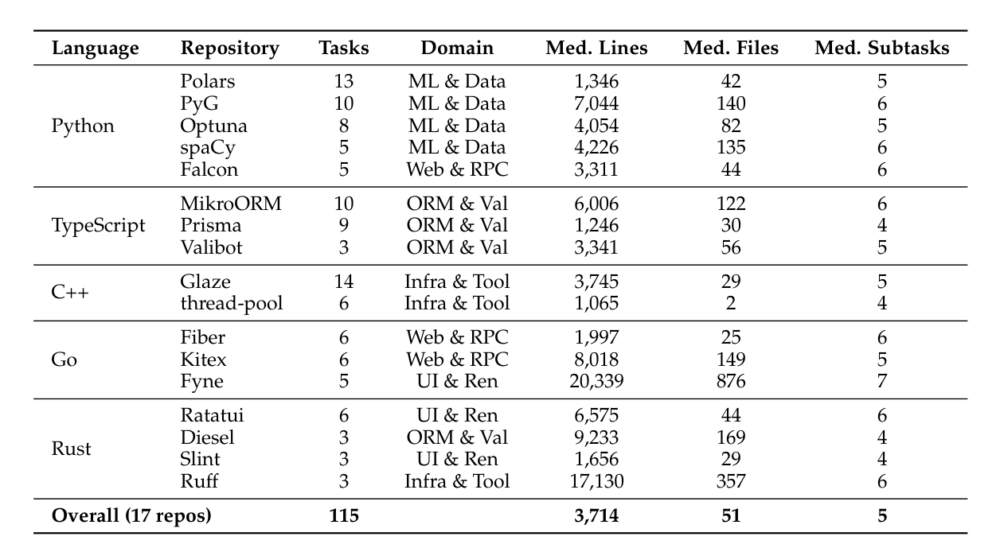
Table 3: Repository coverage by language, domain, task count, and median oracle-patch complexity.Table 3 总结了本基准在 5 种编程语言与多样软件领域上的仓库覆盖情况。
E.2 Task Complexity DistributionE.2 任务复杂度分布
E.3 Temporal Span and Repository ScaleE.3 时间跨度与仓库规模
The benchmark spans releases from 2017 to 2026, covering nearly a decade of software evolution. Repository sizes range from ∼20 KB (thread-pool) to ∼10 MB (Polars, Go repositories), demonstrating diversity across small libraries and large codebases. The temporal spread reduces the risk of memorization from training data.
本基准横跨 2017 至 2026 年的发布，覆盖近十年的软件演化。仓库规模从约 20 KB（thread-pool）到约 10 MB（Polars、Go 仓库）不等，体现出从小型库到大型代码库的多样性。时间上的分散降低了训练数据记忆的风险。
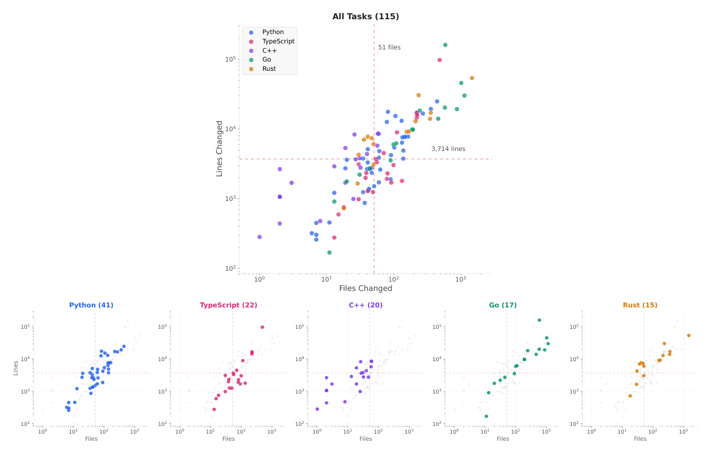
Figure 10: Task complexity overview and per-language breakdown (log-log scale). (a) All 115 tasks colored by language, with dashed lines at the benchmark medians (3,714 lines, 51 files). (b) Per-language panels: each language highlighted against the full benchmark (gray).图 10 以“变更行数—变更文件数”坐标绘制全部 115 个任务。最左侧面板展示完整基准，虚线参考线取中位数（3,714 行、51 个文件）；其余 5 个面板按编程语言分面，将每种语言与完整基准对照。强正相关证实所需代码更多的任务也触及更多文件，而两个维度上跨越两个数量级的散布则体现了基准的多样性。Python 任务聚集于中等区间，并伴有个别高复杂度离群点；Go 与 Rust 任务因生成代码与宏展开而偏向高文件数。
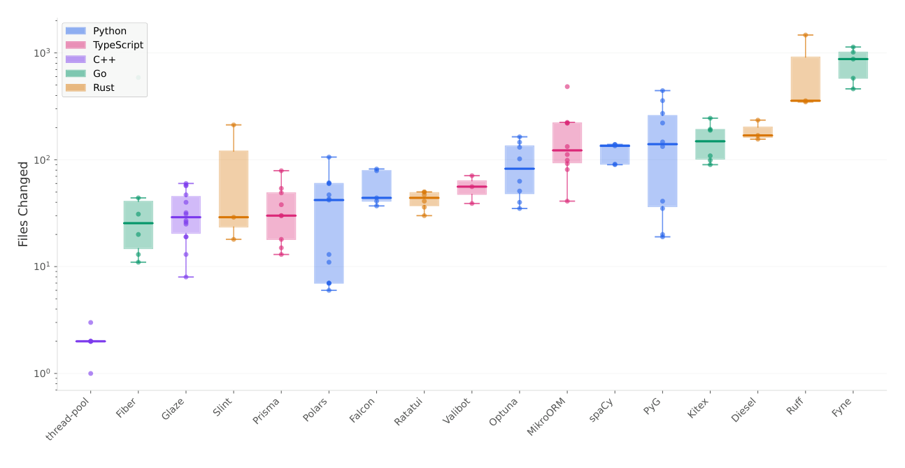
Figure 11: Distribution of files changed (oracle patch) across repositories. Repos are sorted by median files changed (log scale); individual task values are shown as jittered points.图 11 展示各仓库变更文件数的纵向箱线图，按中位数排序；对数刻度的 y 轴凸显复杂度在整个基准上跨越两个以上数量级。
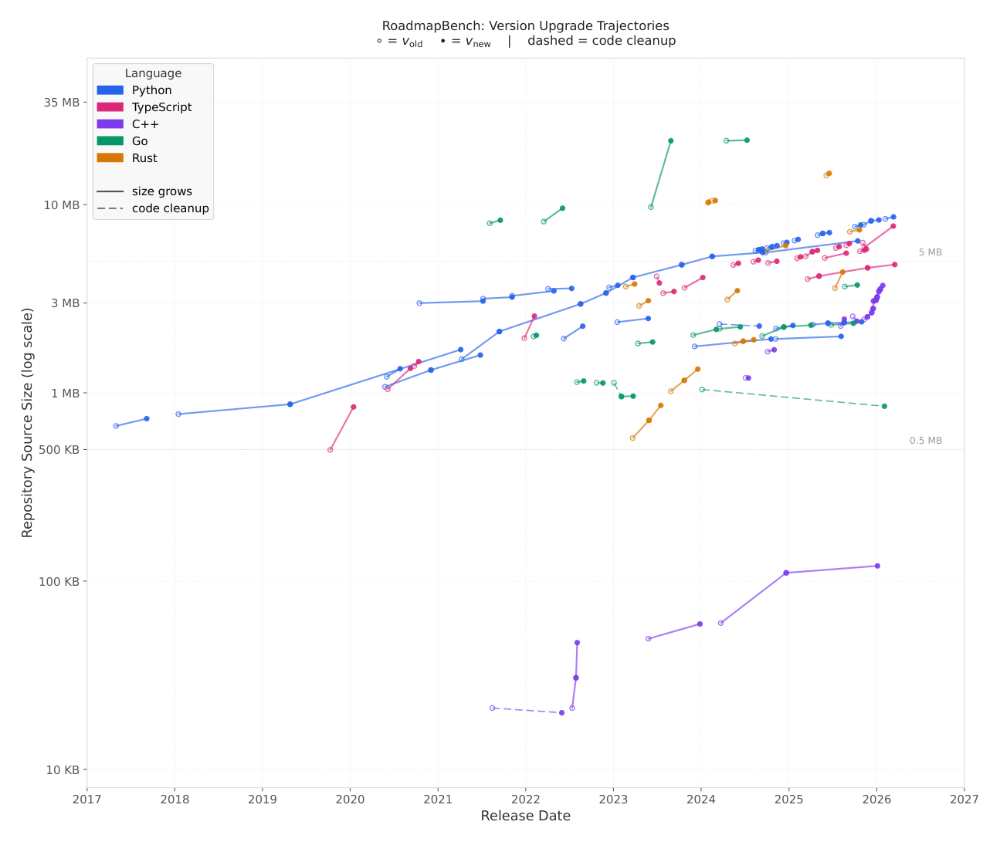
Figure 12: Version upgrade trajectories. Each segment represents one task: hollow circles mark the source version, filled dots mark the target version. Solid lines indicate codebase growth; dashed lines indicate net size reduction. The temporal spread (2017–2026) and size diversity (20 KB–10 MB) demonstrate broad benchmark coverage.图 12 以星座图呈现版本升级轨迹：每条线段连接任务的源版本发布与目标版本，位置由发布日期（x 轴）与仓库源码规模（y 轴，对数刻度）决定。实线表示代码库在版本间增长，虚线表示代码清理（净规模缩减）。
FTask ExampleF 任务示例
Below is the complete instruction for opt-4.0.0-roadmap, a representative ROADMAPBENCH task grounded in the real Optuna v3.6.0→v4.0.0 transition (164-day window, oracle patch: 164 files, 7,794 LOC filtered).
以下是 opt-4.0.0-roadmap 的完整指令。这是一个代表性的 ROADMAPBENCH 任务，基于真实的 Optuna v3.6.0→v4.0.0 升级（时间窗口 164 天；oracle 补丁：164 个文件，7,794 LOC，过滤后）。
Overview. This library is a hyperparameter optimization framework widely used in machine learning and scientific computing. It provides automated search over parameter spaces using efficient sampling algorithms, distributed optimization via various storage backends, and rich visualization of optimization results. Goals. Stabilize two experimental subsystems: the artifact management system and the journal-based dis- tributed storage backend. Introduce constrained optimization awareness into best_trial and best_trials. Add two new termination components — EMMREvaluator and MedianErrorEvaluator. Add is_exhausted() to the grid search sampler.
概览。本库是广泛应用于机器学习与科学计算的超参数优化框架，提供基于高效采样算法的参数空间自动搜索、经由多种存储后端的分布式优化，以及优化结果的丰富可视化。目标。稳定两个实验性子系统：工件（artifact）管理系统与基于 journal 的分布式存储后端；为 best_trial 与 best_trials 引入约束优化感知；新增两个终止组件——EMMREvaluator 与 MedianErrorEvaluator；为网格搜索采样器添加 is_exhausted()。
1. ArtifactMeta — frozen dataclass importable from optuna.artifacts with fields: artifact_id: str, filename: str, mimetype: str, encoding: str | None. 2. download_artifact — importable from optuna.artifacts. All parameters keyword-only: artifact_store (ArtifactStore), file_path (str), artifact_id (str). Returns None. Raises FileExistsError if file_path already exists. 3. get_all_artifact_meta — importable from optuna.artifacts. Positional: study_or_trial (Trial, FrozenTrial, or Study). Keyword-only: storage (default None, required for FrozenTrial). Returns list[ArtifactMeta]. Raises ValueError if storage is None and input is a FrozenTrial. When given a Study, returns only study-level artifacts. 4. upload_artifact — updated to use keyword-only parameters in order: artifact_store, file_path, study_or_trial, with storage, mimetype, encoding as additional keyword-only. Backward compatibility with old positional order maintained. Returns str (artifact ID). Infers MIME type from file extension; defaults to "application/octet-stream". 5. optuna.artifacts.__all__ must include: ArtifactMeta, FileSystemArtifactStore, Boto3ArtifactStore, GCSArtifactStore, Backoff, get_all_artifact_meta, upload_artifact, download_artifact.
1. ArtifactMeta — 冻结 dataclass，可从 optuna.artifacts 导入，字段包括：artifact_id: str, filename: str, mimetype: str, encoding: str | None。2. download_artifact — 可从 optuna.artifacts 导入。所有参数仅限关键字：artifact_store (ArtifactStore), file_path (str), artifact_id (str)；返回 None；若 file_path 已存在则抛出 FileExistsError。3. get_all_artifact_meta — 可从 optuna.artifacts 导入。位置参数：study_or_trial (Trial, FrozenTrial, 或 Study)；仅限关键字：storage（默认 None，对 FrozenTrial 为必需）；返回 list[ArtifactMeta]；若 storage 为 None 且输入为 FrozenTrial 则抛出 ValueError；给定 Study 时仅返回 study 级别的工件。4. upload_artifact — 更新为按以下顺序使用仅限关键字参数：artifact_store, file_path, study_or_trial，另以 storage, mimetype, encoding 作为附加的仅限关键字参数；保持与旧位置参数顺序的向后兼容；返回 str（工件 ID）；从文件扩展名推断 MIME 类型，默认 "application/octet-stream"。5. optuna.artifacts.__all__ 必须包含：ArtifactMeta, FileSystemArtifactStore, Boto3ArtifactStore, GCSArtifactStore, Backoff, get_all_artifact_meta, upload_artifact, download_artifact。
The journal-based storage backend enables distributed optimization over NFS by recording operation logs instead of state snapshots. The module is being reorganized from a private location to a public subpackage with clearer naming conventions. After this target, users should import journal components from optuna.storages.journal using the new class names, while old names remain available (with deprecation warnings) from optuna.storages.
基于 journal 的存储后端通过记录操作日志（而非状态快照）实现基于 NFS 的分布式优化。该模块正从私有位置重组为命名约定更清晰的公开子包。此目标完成后，用户应使用新的类名从 optuna.storages.journal 导入 journal 组件；旧名称在 optuna.storages 中仍可用（附弃用警告）。
1. Create public subpackage optuna/storages/journal/ containing: __init__.py, _base.py, _file.py, _redis.py, _storage.py. 2. Class renames (importable from optuna.storages.journal): BaseJournalBackend (was BaseJournalLogStorage), BaseJournalSnapshot (was BaseJournalLogSnapshot), JournalFileBackend (was JournalFileStorage), JournalRedisBackend (was JournalRedisStorage), JournalFileSymlinkLock, JournalFileOpenLock, JournalStorage (unchanged). 3. Old names remain importable from optuna.storages with deprecation warnings. BaseJournalLogStorage should subclass BaseJournalBackend decorated with @deprecated_class. 4. optuna.storages.journal.__all__ must include: JournalFileBackend, BaseJournalBackend, JournalFileOpenLock, JournalFileSymlinkLock, JournalRedisBackend, JournalStorage.
1. 创建公开子包 optuna/storages/journal/，包含：__init__.py, _base.py, _file.py, _redis.py, _storage.py。2. 类重命名（可从 optuna.storages.journal 导入）：BaseJournalBackend（原 BaseJournalLogStorage）、BaseJournalSnapshot（原 BaseJournalLogSnapshot）、JournalFileBackend（原 JournalFileStorage）、JournalRedisBackend（原 JournalRedisStorage）、JournalFileSymlinkLock、JournalFileOpenLock、JournalStorage（不变）。3. 旧名称仍可从 optuna.storages 导入，附弃用警告；BaseJournalLogStorage 应继承 BaseJournalBackend 并以 @deprecated_class 装饰。4. optuna.storages.journal.__all__ 必须包含：JournalFileBackend, BaseJournalBackend, JournalFileOpenLock, JournalFileSymlinkLock, JournalRedisBackend, JournalStorage。
When running constrained optimization, users set constraint values on each trial via system attributes. However, best_trial and best_trials currently ignore these constraints. This target makes these properties constraint-aware. After this target, study.best_trial returns the best feasible trial (all constraint values ≤0.0), and study.best_trials computes the Pareto front from only feasible trials. If no feasible trials exist, best_trial raises ValueError.
运行约束优化时，用户通过系统属性为每个 trial 设置约束值，但 best_trial 与 best_trials 目前会忽略这些约束。本目标使这两个属性具备约束感知：完成后，study.best_trial 返回最佳可行 trial（所有约束值 ≤0.0），study.best_trials 仅从可行 trial 计算 Pareto 前沿；若不存在可行 trial，best_trial 抛出 ValueError。
1. Helper module optuna/study/_constrained_optimization.py: define constant _CONSTRAINTS_KEY = "constraints". Implement _get_feasible_trials(trials) returning only trials where all constraint values are ≤0.0. Trials without a "constraints" key are considered infeasible. 2. best_trial property: if the best trial is infeasible, filter to feasible trials and select the one with best objective value (respecting study.direction). Raise ValueError if none exist. 3. best_trials property: when any trial has the constraints key, compute Pareto front from feasible trials only.
1. 辅助模块 optuna/study/_constrained_optimization.py：定义常量 _CONSTRAINTS_KEY = "constraints"；实现 _get_feasible_trials(trials)，仅返回所有约束值 ≤0.0 的 trial；不含 "constraints" 键的 trial 视为不可行。2. best_trial 属性：若最佳 trial 不可行，则过滤出可行 trial 并选取目标值最优者（遵循 study.direction）；若无可行 trial 则抛出 ValueError。3. best_trials 属性：当任一 trial 含 constraints 键时，仅从可行 trial 计算 Pareto 前沿。
The existing termination framework allows optimization to stop when further trials are unlikely to yield improvements. This target introduces two new components: EMMREvaluator (Expected Minimum Model Regret) and MedianErrorEvaluator (derives threshold from paired improvement evaluator’s outputs). After this target, a user can create an EMMREvaluator, pair it with a MedianErrorEvaluator, and pass both to a Terminator for GP-based automatic stopping.
现有终止框架允许在进一步的 trial 不太可能带来改进时停止优化。本目标引入两个新组件：EMMREvaluator（Expected Minimum Model Regret）与 MedianErrorEvaluator（由配对改进评估器的输出导出阈值）。完成后，用户可创建 EMMREvaluator，与 MedianErrorEvaluator 配对，并将两者传给 Terminator，实现基于 GP 的自动停止。
1. EMMREvaluator — importable from optuna.terminator, inherits BaseImprovementEvaluator. Constructor: __init__(self, deterministic_objective=False, delta=0.1, min_n_trials=2, seed=None). Raises ValueError if min_n_trials <= 1. Method evaluate: returns EMMR value; returns sys.float_info.max with insufficient trials or empty search space. 2. MedianErrorEvaluator — importable from optuna.terminator, inherits BaseErrorEvaluator. Con- structor: __init__(self, paired_improvement_evaluator, warm_up_trials=10, n_initial_trials=20, threshold_ratio=0.01). Raises ValueError for invalid args. Method evaluate: before sufficient data returns negative sentinel; on first sufficient call computes median of improvement values multiplied by threshold_ratio, caches result. 3. optuna.terminator.__all__ must include both EMMREvaluator and MedianErrorEvaluator.
1. EMMREvaluator — 可从 optuna.terminator 导入，继承 BaseImprovementEvaluator。构造函数：__init__(self, deterministic_objective=False, delta=0.1, min_n_trials=2, seed=None)；若 min_n_trials <= 1 则抛出 ValueError。方法 evaluate：返回 EMMR 值；trial 不足或搜索空间为空时返回 sys.float_info.max。2. MedianErrorEvaluator — 可从 optuna.terminator 导入，继承 BaseErrorEvaluator。构造函数：__init__(self, paired_improvement_evaluator, warm_up_trials=10, n_initial_trials=20, threshold_ratio=0.01)；参数无效时抛出 ValueError。方法 evaluate：数据不足时返回负的哨兵值；首次数据充分时计算改进值的中位数乘以 threshold_ratio 并缓存结果。3. optuna.terminator.__all__ 必须同时包含 EMMREvaluator 与 MedianErrorEvaluator。
• All new classes and functions importable from their documented paths • Existing APIs remain unchanged (backward compatibility) • Deprecated old names still importable with deprecation warnings • Constraint-aware best_trial raises ValueError when no feasible trials exist • EMMREvaluator returns finite values with sufficient trials and large values with insufficient data • MedianErrorEvaluator caches its threshold after first computation • GridSampler.is_exhausted() correctly reports grid coverage
• 所有新类与函数均可从其文档化路径导入 • 现有 API 保持不变（向后兼容） • 被弃用的旧名称仍可导入，附弃用警告 • 具约束感知的 best_trial 在不存在可行 trial 时抛出 ValueError • EMMREvaluator 在 trial 充足时返回有限值，数据不足时返回大值 • MedianErrorEvaluator 首次计算后缓存其阈值 • GridSampler.is_exhausted() 正确报告网格覆盖情况
GConstruction Pipeline DetailsG 构建流水线细节
G.1 Repository Selection CriteriaG.1 仓库遴选标准
Candidate repositories must satisfy the following hard constraints: at least 1,000 GitHub stars, five or more tagged releases, continued release activity through 2025, and a primary language among our five targets (Python, TypeScript, Go, Rust, Java).
候选仓库必须满足以下硬性约束：至少 1,000 个 GitHub stars、5 个及以上带标签发布、发布活动延续至 2025 年，且主语言属于我们 5 种目标语言（Python、TypeScript、Go、Rust、Java）之一。
Definition of high-quality release documentation. We require that each selected repository maintains release documentation with sufficient information density to support task construction. Concretely, a release qualifies as high-quality if it satisfies the following criteria:
高质量发布文档的定义。我们要求每个入选仓库维护信息密度足以支撑任务构建的发布文档。具体而言，一个发布若满足以下标准即视为高质量：
• Uses natural language to describe what changed in the version, rather than merely listing pull-request numbers or commit hashes. • Explains the background or motivation behind non-trivial changes (e.g., “to address X limitation” or “in response to user feedback on Y”). • Clearly states user-facing impacts such as breaking changes, deprecated APIs, behavioral modifications, or newly introduced features. • Optionally includes code examples, configuration snippets, or migration guides (these are positive signals but not strictly required).
• 以自然语言描述版本中的变化，而非仅罗列 pull-request 编号或 commit 哈希。 • 解释非平凡变更背后的背景或动机（例如“为解决 X 局限”或“为回应用户对 Y 的反馈”）。 • 清晰陈述面向用户的影响，如破坏性变更、弃用的 API、行为修改或新引入的功能。 • 可选地包含代码示例、配置片段或迁移指南（这些是加分信号，但非严格必需）。
Releases that consist solely of auto-generated commit lists (e.g., fix #123, merge PR #456), empty bodies, or single-line descriptions are excluded. Each repository must have at least three releases meeting the above standard. Figure 13 shows representative examples of qualifying release documentation.
仅由自动生成的 commit 列表（如 fix #123、merge PR #456）、空正文或单行描述构成的发布一律排除。每个仓库必须有至少 3 个满足上述标准的发布。图 13 展示了合格发布文档的代表性示例。
Expert review and version-pair selection. Expert reviewers verify the quality of release documentation identified in the previous step and select consecutive version pairs suitable for task construction. A version pair is retained if it satisfies: (1) a non-trivial code delta of at least 500 lines changed, (2) at least one externally visible behavioral change expressible as a deterministic test, and (3) release documentation that describes the change in sufficient detail to construct an instruction.
专家评审与版本对遴选。专家评审者核验上一步识别的发布文档质量，并遴选适合任务构建的连续版本对。版本对满足以下条件即予保留：(1) 至少 500 行变更的非平凡代码差异；(2) 至少一处可表达为确定性测试的外部可见行为变化；(3) 发布文档对变更的描述足够详尽，可据以构建指令。
G.2 Static Review DetailsG.2 静态评审细节
Stage 3 applies two complementary reviews under structured checklists, with expert reviewers assisted by Claude-Opus-4.7.
阶段 3 依结构化检查清单开展两项互补评审，专家评审者由 Claude-Opus-4.7 协助。
Compliance review (20 items). The compliance review is conducted from the perspective of a solver who has no prior knowledge of the repository or version upgrade. It covers five categories:
合规性评审（20 项）。合规性评审以对仓库或版本升级毫无先验了解的求解者视角展开，覆盖 5 个类别：
1. Specification clarity (Q1–Q3): each target’s goal and constraints are explicitly stated; the instruction is self-contained without referencing the construction process; requirements are defined positively rather than by exclusion. 2. Implementation leakage (Q4): a systematic scan for five leakage types—algorithm/flow steps, internal naming, pseudo-code control flow, bug root-cause disclosure, and refactoring checklists—that reveal how to implement rather than what behavior is required. 3. Information integrity (Q5–Q7): public API contracts are unambiguous; no test metadata (file names, function names, scoring details) is disclosed; no version numbers or repository names appear. 4. Narrative quality (Q8–Q9): the instruction provides a coherent version narrative with clear prior- ity ordering among targets; individual target sections follow a consistent structure (background, requirements, constraints). 5. Test conventions (T1–T7): tests use the required directory layout; target weights sum to 1.0; tests are deterministic and environment-independent; tests do not check implementation internals beyond the specified public contract.
1. 规格清晰性（Q1–Q3）：每个目标的意图与约束均有明确陈述；指令自含，不引用构建过程；要求以正向方式定义而非借助排除。 2. 实现泄露（Q4）：系统扫描 5 种泄露类型——算法/流程步骤、内部命名、伪代码控制流、缺陷根因披露与重构清单——它们揭示的是如何实现，而非需要什么行为。 3. 信息完整性（Q5–Q7）：公共 API 契约无歧义；不泄露测试元数据（文件名、函数名、评分细节）；不出现版本号或仓库名。 4. 叙事质量（Q8–Q9）：指令提供连贯的版本叙事，目标间优先级排序清晰；各目标小节遵循一致的结构（背景、要求、约束）。 5. 测试规范（T1–T7）：测试采用规定的目录布局；目标权重之和为 1.0；测试确定性成立且与环境无关；测试不检查超出规定公共契约的实现内部。
Figure 13: Examples of high-quality release documentation from three selected repositories. Each row shows cropped excerpts from a single version release, illustrating feature narratives, code examples, migration guides, and breaking-change descriptions that serve as source material for task construction.
A task fails the compliance review if any item is marked FAIL. The synthesis agent revises the instruction or tests accordingly and re-validates.
若任一项目被标记为 FAIL，任务即未通过合规性评审；综合智能体（synthesis agent）随之修订指令或测试，并重新验证。
Per-target correctness review. For each target independently, a reviewer checks instruction–test align- ment along four dimensions:
逐目标正确性评审。评审者对每个目标独立检查指令-测试对齐，沿以下 4 个维度：
1. Completeness: every behavior asserted by tests is stated in the instruction. 2. Faithfulness: tests do not assert behaviors beyond the instruction specification. 3. Fairness: tests do not rely on unstated assumptions (e.g., exact error wording, internal names). 4. Minimality: tests performing only dead-letter matching without behavioral value are flagged for removal.
1. 完整性：测试断言的每个行为均已在指令中陈述。 2. 忠实性：测试不断言超出指令规格的行为。 3. 公平性：测试不依赖未声明的假设（如确切的错误措辞、内部名称）。 4. 最小性：仅做死信匹配而无行为价值的测试将被标记移除。
Issues are classified as T-missing, T-ambiguous, T-incorrect, or T-other. Each confirmed issue is repaired by updating the instruction or test, and the oracle patch is re-run to confirm the fail-to-pass guarantee.
问题被归类为 T-missing、T-ambiguous、T-incorrect 或 T-other。每个确认的问题通过更新指令或测试来修复，并重跑 oracle 补丁以确认 fail-to-pass 保证。
G.3 Quality Control ProtocolG.3 质量控制协议
G.3.1 Attribution ClassificationG.3.1 归因分类
During rollout-based quality control, agent failures are attributed to either task-side defects (T-type) or model-side failures (M-type). T-type defects indicate problems in the task itself, such as missing specifications or flawed tests, while M-type failures reflect genuine limitations of the agent. Attribution is performed through expert review of agent trajectories and test outcomes.
在基于 rollout 的质量控制中，智能体失败被归因为任务侧缺陷（T 类）或模型侧失败（M 类）：T 类缺陷指向任务本身的问题（如规格缺失或有缺陷的测试），M 类失败则反映智能体的真实局限。归因经由专家评审智能体轨迹与测试结果完成。
T-type defects are classified into four subcategories: (1) instruction gaps (a behavioral requirement is not mentioned in the instruction), (2) test brittleness (a test assertion is stricter than the instruction warrants, e.g., checking internal implementation details), (3) environment issues (a dependency or environment variable required for the task is missing from the Docker image), and (4) grading errors (the subtask-level test runner assigns incorrect weights or groupings).
T 类缺陷细分为 4 个子类：(1) 指令缺口（指令未提及某项行为要求）；(2) 测试脆弱性（测试断言比指令所保证的更严格，例如检查内部实现细节）；(3) 环境问题（Docker 镜像缺失任务所需的依赖或环境变量）；(4) 评分错误（子任务级测试运行器赋予错误的权重或分组）。
M-type failures are classified into three subcategories: (1) design failures (the agent’s implementation does not match the specification at a structural level), (2) implementation bugs (the implementation is structurally correct but contains code errors), and (3) debugging failures (the agent identifies an error but fails to correct it within the turn budget).
M 类失败细分为 3 个子类：(1) 设计失败（智能体的实现在结构层面与规格不符）；(2) 实现缺陷（实现结构正确但包含代码错误）；(3) 调试失败（智能体识别出错误，却未能在轮次预算内修正）。
G.3.2 Inter-Annotator AgreementG.3.2 标注者间一致性
To assess attribution consistency, we randomly sampled 40 agent trajectories for independent annotation by two annotators. Cohen’s κ for T-type vs. M-type classification was 0.83, indicating strong agreement. Disagreements were resolved by a third annotator. The classification rubric and calibration examples are included in the supplementary materials.
为评估归因一致性，我们随机抽取 40 条智能体轨迹，由两名标注者独立标注。T 类与 M 类分类的 Cohen's κ 为 0.83，表明一致性很强；分歧由第三位标注者裁决。分类标准与校准示例收录于补充材料。
G.3.3 Iterative QC ImpactG.3.3 迭代质量控制的影响
Each task undergoes iterative validation: an initial rollout identifies T-type defects, which are then fixed before re-evaluation. Of the 115 tasks, 45 required at least one fix round (average 3.1 rounds). Table 4 reports model performance before and after QC on all 115 tasks. For tasks that required no fix, the before and after scores are identical.
每个任务均经历迭代验证：初始 rollout 识别 T 类缺陷，随后在重新评估前完成修复。115 个任务中有 45 个需要至少一轮修复（平均 3.1 轮）。Table 4 报告了全部 115 个任务在质量控制前后的模型性能；对无需修复的任务，前后得分一致。
Table 4: Impact of iterative QC on model performance (Terminus, 115 tasks). “Before”: initial validation; “After”: post-repair rollout.
HError Classification DetailsH 错误分类细节
This appendix provides the complete error taxonomy, classification methodology, per-model distributions, and representative case studies referenced in §5.6.
本附录提供 §5.6 所引用的完整错误分类体系、分类方法、各模型分布与代表性案例研究。
H.1 Classification MethodologyH.1 分类方法
Each failed subtask is classified by a Claude-Sonnet-4.6 instance operating in agentic mode via Claude Code. For each task containing failed subtasks, the classifier:
每个失败子任务由一个经 Claude Code 以智能体模式运行的 Claude-Sonnet-4.6 实例进行分类。对每个包含失败子任务的任务，分类器：
1. Reads the complete test output (test-stdout.txt) containing all subtask results.
1. 读取包含全部子任务结果的完整测试输出（test-stdout.txt）。
2. Reads the task specification (instruction.md) to understand requirements.
2. 读取任务规格（instruction.md）以理解需求。
3. Optionally inspects the agent’s final code or greps the trajectory for relevant context.
3. 视需要检查智能体的最终代码，或在轨迹中检索相关上下文。
4. Outputs a structured classification for each failed subtask: category, sub-type, root-cause phrase (English, 2–5 words), and rationale (1–3 sentences with technical detail).
4. 为每个失败子任务输出结构化分类：类别、子类型、根因短语（英文，2–5 个词）与理由（1–3 句含技术细节的说明）。
The task-level approach (one classifier call per task, classifying all failed subtasks together) enables cross-subtask awareness—e.g., recognizing that multiple subtasks fail due to the same root compilation error (classified as one primary Syntax Error plus cascading failures).
任务级方法（每任务一次分类器调用，一并分类所有失败子任务）带来了跨子任务感知——例如识别出多个子任务因同一根因编译错误而失败（归为一个主要 Syntax Error 加级联失败）。
Validation. We manually validated 50 randomly sampled classifications across all models and categories. The automated classifier achieved 88% exact-match agreement with expert labels at the category level (following the validation protocol of Jimenez et al. (2024)). Disagreements primarily involved the boundary between Code Defect and Wiring Error—both are implementation-level failures, so category- level accuracy is higher than sub-type accuracy.
验证。我们在所有模型与类别中人工核验了 50 个随机抽样的分类结果。在类别层面，自动分类器与专家标签达到 88% 的精确匹配一致率（遵循 Jimenez et al. (2024) 的验证协议）。分歧主要集中在 Code Defect 与 Wiring Error 的边界——两者同属实现层失败，因此类别级准确率高于子类型准确率。
Coverage and cost. Classification covers 3,603 failed subtasks across 13 models (1,065 task groups). Total cost is approximately $350.
覆盖与成本。分类覆盖 13 个模型的 3,603 个失败子任务（1,065 个任务组），总成本约 $350。
H.2 Error TaxonomyH.2 错误分类体系
Table 5Table 5 定义了 5 个错误类别与 14 个子类型。类别按失败阶段排序——从早期灾难性失败（代码无法编译）到后期细微失败（代码可编译运行但产生错误结果）。每个类别内，子类型刻画失败的具体机制。
| Category | Sub-type | Definition | Freq. |
|---|---|---|---|
| Build Error | Cascading | A root error in a shared module causes compilation | 15.8% |
| (28.3%) | failure across multiple subtasks. | ||
| Syntax Error | Direct compilation/linking failure: syntax error, type | 11.1% | |
| mismatch, or unresolved symbol. | |||
| Dependency | Incompatible dependency version or import of an | 1.4% | |
| unavailable package. | |||
| Missing Impl. | Not Implemented | Required functionality entirely absent—symbol or | 13.8% |
| (22.6%) | module does not exist. | ||
| Partially Impl. | Main feature exists but specific sub-requirements are | 8.8% | |
| skipped. | |||
| Interface | Wrong Signature | API exists but signature (parameters, return type) | 3.7% |
| Mismatch (6.5%) | does not match. | ||
| Wrong Path | Code exists but is inaccessible: wrong module path | 2.7% | |
| or missing re-export. | |||
| Code Defect | Logical bug: wrong formula, off-by-one, nil derefer- | 23.1% | |
| Impl. Error | ence, incorrect condition. | ||
| Wiring Error | Components correct but integration broken: params | 6.8% | |
| (38.5%) | not forwarded, features not activated. | ||
| Misunderstanding | Agent misinterprets the specification; implements | 5.9% | |
| wrong semantics. | |||
| Edge Case | Main path works; failures only on unusual boundary | 1.4% | |
| inputs. | |||
| Runtime Crash | Compiles but crashes at runtime: unhandled excep- | 1.4% | |
| tion, deadlock, OOM. | |||
| Agent Failure | Abandoned | Agent stops working: gives up, analysis paralysis, | 3.5% |
| (4.0%) | or skips remaining subtasks. | ||
| Exhausted | Budget/step/time limit hit or OOM-killed before | 0.5% | |
| completion. |
H.3 Per-Model Error DistributionH.3 各模型错误分布
H.4 Per-Model AnalysisH.4 各模型分析
Claude-Opus-4.7 (pass 70%). The strongest model with fewest total failures (136). Concentrates 55% in Implementation Error (Code Defect 38%), with Build Error nearly absent (4%). Missing Implementation accounts for 29%, driven equally by Not Implemented and Partially Implemented.
Claude-Opus-4.7（通过 70%）。最强模型，总失败数最少（136）。其失败 55% 集中于 Implementation Error（Code Defect 占 38%），Build Error 几乎绝迹（4%）。Missing Implementation 占 29%，由 Not Implemented 与 Partially Implemented 均分驱动。
Claude-Opus-4.6 (pass 64%). Concentrates 58% of failures in Implementation Error, dominated by Code Defect (38%). Build Error is rare (15%), and nearly half of those are cascading failures from a single root cause. This model rarely leaves features unimplemented; its bottleneck is execution precision.
Claude-Opus-4.6（通过 64%）。其失败 58% 集中于 Implementation Error，以 Code Defect 为主（占 38%）。Build Error 罕见（15%），且其中近半数源自单一根因的级联失败。该模型很少留下未实现的功能，瓶颈在于执行精度。
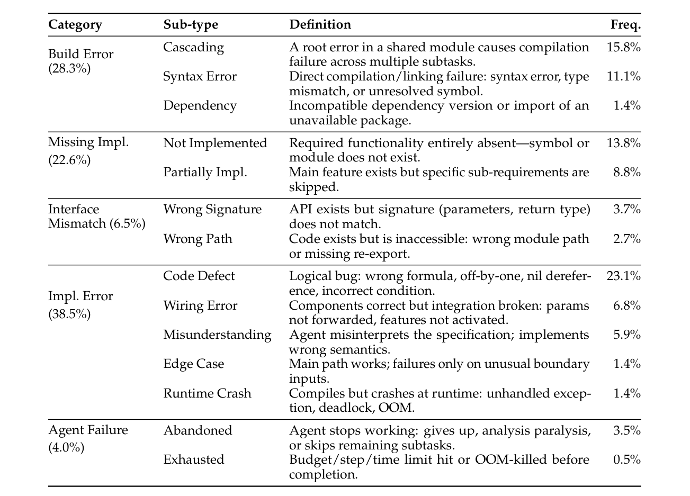
Table 5: Error taxonomy with category and sub-type definitions. Categories are ordered by failure stage. “Freq.” shows the distribution across all 3,603 classified failures.Table 5 定义了 5 个错误类别与 14 个子类型。类别按失败阶段排序——从早期灾难性失败（代码无法编译）到后期细微失败（代码可编译运行但产生错误结果）。每个类别内，子类型刻画失败的具体机制。
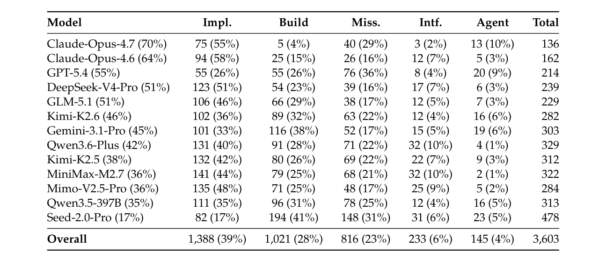
Table 6: Per-model error category distribution (count and percentage of failed subtasks). Parentheses after model names indicate subtask pass rate.
GPT-5.4 (pass 55%). Uniquely dominated by Missing Implementation (36%)—the highest among all models. Agent Failure is also elevated (9%, all Abandoned), reflecting the “analysis paralysis” pattern where the model explores extensively but never starts writing code. When it does implement, Build and Implementation Errors are balanced (26% each).
GPT-5.4（通过 55%）。独树一帜地以 Missing Implementation 为主导（36%）——为所有模型中最高。Agent Failure 也偏高（9%，全部为 Abandoned），体现出“分析瘫痪”模式：模型大量探索却迟迟不动手写代码。一旦真正开始实现，Build Error 与 Implementation Error 大致均衡（各占 26%）。
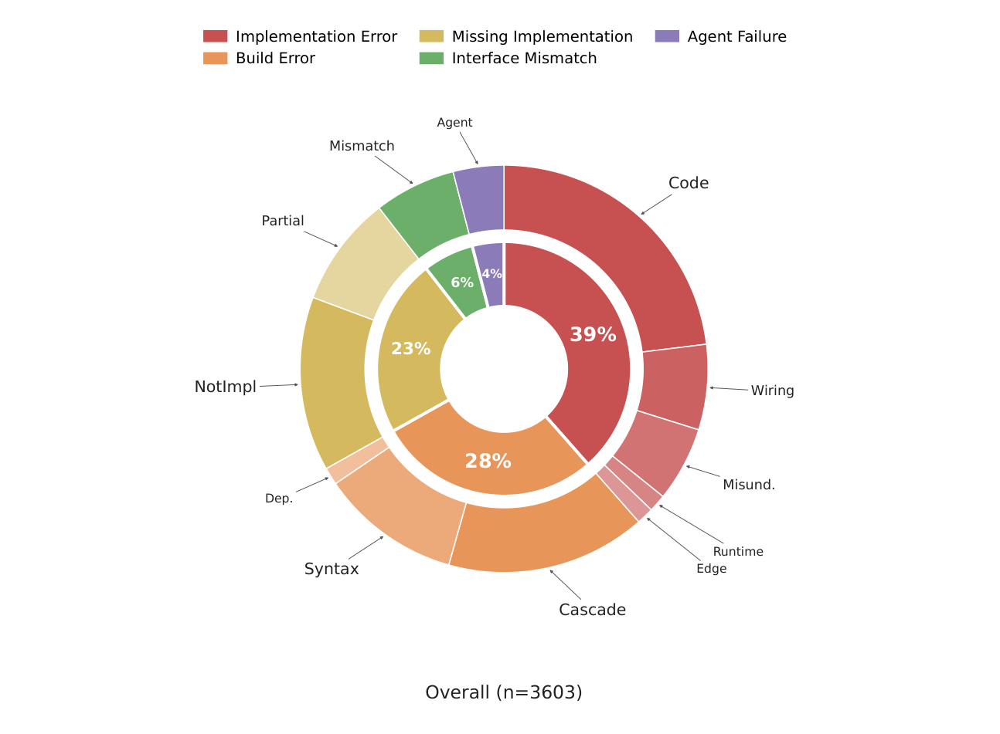
Figure 14: Overall error distribution across all models (n=3,603 failed subtasks). Implementation Error dominates (39%), with Code Defect as the single largest sub-type.图 14 展示全部 3,603 个已分类失败的总体错误分布：Implementation Error 是主导类别（39%），其后是 Build Error（28%）与 Missing Implementation（23%）。在 Implementation Error 内部，仅 Code Defect 一项就占该子类型的一半以上（总体占 23%）。
DeepSeek-V4-Pro (pass 51%). Profile resembles Opus but with more Build Errors (23% vs. 15%). Implementation Error remains dominant (51%), indicating strong architectural planning but less precise execution. Agent Failure is minimal (3%).
DeepSeek-V4-Pro（通过 51%）。画像与 Opus 相似，但 Build Error 更多（23% vs. 15%）。Implementation Error 仍占主导（51%），表明其架构规划能力强、执行精度稍逊。Agent Failure 极少（3%）。
GLM-5.1 (pass 51%). Similar to DeepSeek with 46% Implementation Error and 29% Build Error. The higher Build Error ratio compared to Opus suggests less robust handling of complex type systems and module structures.
GLM-5.1（通过 51%）。与 DeepSeek 相似：Implementation Error 为 46%、Build Error 为 29%。相较 Opus 更高的 Build Error 占比，表明其对复杂类型系统与模块结构的处理不够稳健。
Kimi-K2.6 (pass 46%). Balanced between Implementation Error (36%) and Build Error (32%), with cascading failures accounting for 21% of total. Agent Failure is moderately elevated (6%), split be- tween Abandoned (12) and Exhausted (4). Profile sits between GLM-5.1 and Gemini—stronger than its predecessor K2.5 on Implementation Error but with similar Build Error rates.
Kimi-K2.6（通过 46%）。在 Implementation Error（36%）与 Build Error（32%）之间较为均衡，级联失败占总数的 21%。Agent Failure 中度偏高（6%），分布于 Abandoned（12）与 Exhausted（4）。画像介于 GLM-5.1 与 Gemini 之间——Implementation Error 上强于前代 K2.5，Build Error 比率则与之相近。
Gemini-3.1-Pro (pass 45%). Build Error dominates (38%)—the highest share among mid-tier models. Cascading failures are frequent (22% of total failures), indicating that compilation errors in early subtasks propagate to later subtasks. Implementation Error is relatively lower (33%).
Gemini-3.1-Pro（通过 45%）。Build Error 占主导（38%）——为中层模型中最高占比。级联失败频发（占总失败的 22%），表明早期子任务的编译错误会向后续子任务传播。Implementation Error 相对较低（33%）。
Qwen3.6-Plus (pass 42%). Interface Mismatch is notably high (10%), suggesting difficulty with API surface compliance (export paths, naming conventions). Otherwise balanced between Implementation Error (40%) and Build Error (28%).
Qwen3.6-Plus（通过 42%）。Interface Mismatch 明显偏高（10%），提示其在 API 表面合规（导出路径、命名约定）上存在困难；其余方面则在 Implementation Error（40%）与 Build Error（28%）之间较为均衡。
Kimi-K2.5 (pass 38%). Distribution closely matches Qwen3.6-Plus. Missing Implementation (22%) indicates that this model occasionally abandons complex sub-requirements.
Kimi-K2.5（通过 38%）。分布与 Qwen3.6-Plus 高度接近。Missing Implementation（22%）表明该模型偶尔会放弃复杂的子需求。
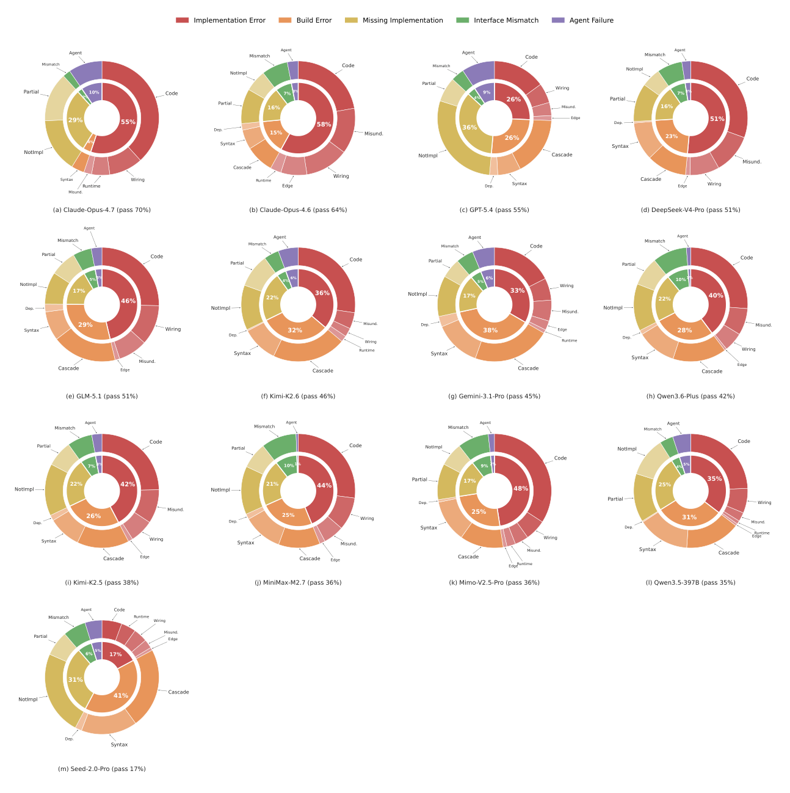
Figure 15: Error distribution for all thirteen analyzed models (inner ring: category proportions; outer ring: sub-type breakdown). Models are ordered by decreasing subtask pass rate from (a) to (m). The dominant failure mode shifts from Implementation Error (strong models) to Build Error and Missing Implementation (weak models).图 15 按子任务通过率排序逐模型分解该分布；Table 6 提供精确的计数与百分比。
MiniMax-M2.7 (pass 36%). Highest Implementation Error percentage among mid-tier models (44%), with Interface Mismatch also elevated (10%). Agent Failure is nearly zero (1%), meaning the model always attempts implementation—but frequently produces incorrect results.
MiniMax-M2.7（通过 36%）。拥有中层模型中最高的 Implementation Error 占比（44%），Interface Mismatch 亦偏高（10%）。Agent Failure 接近零（1%），意味着该模型总会尝试实现——只是经常产出错误结果。
Mimo-V2.5-Pro (pass 36%). Implementation Error dominates (48%), with Code Defect at 34%—the highest raw Code Defect rate among all models. Interface Mismatch is elevated (9%), split between Wrong Signature (15) and Wrong Path (10). Partially Implemented (29) exceeds Not Implemented (19), indicating the model attempts most features but often delivers incomplete solutions.
Mimo-V2.5-Pro（通过 36%）。Implementation Error 占主导（48%），Code Defect 达 34%——为所有模型中最高的原始 Code Defect 比率。Interface Mismatch 偏高（9%），分布于 Wrong Signature（15）与 Wrong Path（10）。Partially Implemented（29）超过 Not Implemented（19），表明该模型会尝试大多数功能，却常交付不完整的方案。
Qwen3.5-397B (pass 35%). Balanced across Implementation Error (35%), Build Error (31%), and Missing Implementation (25%). Syntax Error is notably high within Build Error (46 of 96), suggesting frequent compilation-level mistakes rather than cascading propagation. Partially Implemented (43) strongly
Qwen3.5-397B（通过 35%）。在 Implementation Error（35%）、Build Error（31%）与 Missing Implementation（25%）之间较为均衡。Build Error 内部 Syntax Error 明显偏高（96 例中占 46 例），提示其错误多为编译层的直接失误，而非级联传播。Partially Implemented（43）明显
dominates Not Implemented (35), a pattern distinct from weaker models where Not Implemented typically leads.
多于 Not Implemented（35）——这一模式与较弱模型中 Not Implemented 通常占先的情形不同。
Seed-2.0-Pro (pass 17%). Dominated by Build Error (41%) and Missing Implementation (31%). Imple- mentation Error accounts for only 17%—not because the model is precise, but because code often fails to compile before behavioral correctness can be evaluated. This model represents the weakest capability tier where fundamental code generation is the bottleneck.
Seed-2.0-Pro（通过 17%）。以 Build Error（41%）与 Missing Implementation（31%）为主。Implementation Error 仅占 17%——这并非因为模型精确，而是因为代码往往在行为正确性有机会被评估之前就无法编译。该模型代表最弱的能力层级，基础代码生成是其瓶颈。
H.5 Representative Case StudiesH.5 代表性案例研究
We present one representative case per error category, selected to demonstrate how each failure type manifests in practice. Each case includes the target requirement, the key test output, and root-cause analysis.
我们为每个错误类别呈现一个代表性案例，以展示各类失败在实践中的具体表现。每个案例包含目标要求、关键测试输出与根因分析。
Case 1: Implementation Error (Code Defect)案例 1：Implementation Error（Code Defect）
pyg-1.7.2-roadmap Target 6: Regularization Functions | Kimi-K2.5
pyg-1.7.2-roadmap 目标 6：正则化函数 | Kimi-K2.5
Target Requirement: Implement a gini(w: Tensor) function that computes the Gini coefficient of a 2D weight matrix (row-wise inequality of absolute values, averaged across rows). A fully sparse row gives Gini close to 1.0; uniform gives 0.0. For a matrix with row 1 = [0,0,0,0] and row 2 = [0,0,0,1000], the expected Gini is 0.5.
目标要求：实现 gini(w: Tensor) 函数，计算二维权重矩阵的 Gini 系数（按行度量绝对值不平等度，再跨行取平均）。完全稀疏的行给出接近 1.0 的 Gini；均匀分布给出 0.0。对第 1 行 = [0,0,0,0]、第 2 行 = [0,0,0,1000] 的矩阵，期望 Gini 为 0.5。
Root Cause: The normalization formula is inverted. The agent wrote gini = gini / (n - 1) instead of the correct gini = gini * n / (n - 1). For the test input [0,0,0,1000]: raw Gini = 0.75, correct normalized = 0.75 × 4 3 = 1.0, but the implementation computes 0.75 ÷ 3 = 0.25. Averaging with the all-zero row (Gini = 0) yields 0.125 instead of the expected 0.5. Insight: Six of seven tests pass—the function exists, compiles, and handles most cases correctly. The failure is a single arithmetic operator error (/ vs. *) in a normalization formula, exemplifying the “execution precision” bottleneck: models understand the algorithm but make subtle mistakes when translating mathematical specifications to code.
根因：归一化公式写反了。智能体写的是 gini = gini / (n - 1)，而正确的应为 gini = gini * n / (n - 1)。以测试输入 [0,0,0,1000] 为例：原始 Gini = 0.75，正确的归一化结果 = 0.75 × 4 3 = 1.0，但实现却算出 0.75 ÷ 3 = 0.25。与全零行（Gini = 0）取平均后得到 0.125，而非期望的 0.5。洞见：七个测试中有六个通过——函数存在、可编译且能正确处理多数情况；失败仅源于归一化公式中一个算术运算符的错用（/ 与 * 之差），正是“执行精度”瓶颈的写照：模型理解算法，却在把数学规格转译为代码时犯下细微错误。
Case 2: Build Error (Circular Import)案例 2：Build Error（循环导入）
fal-1.3.0-roadmap Target 1: Media Framework | GPT-5.4
fal-1.3.0-roadmap 目标 1：媒体框架 | GPT-5.4
Target Requirement: Create a pluggable media handling system: BaseHandler abstract class, Handlers registry mapping content types to handler instances, JSONHandler/MessagePackHandler implementations, and a validate(schema) decorator for JSON Schema validation. Add media properties on Request/Response for automatic serialization.
目标要求：创建可插拔的媒体处理系统：BaseHandler 抽象类、把内容类型映射到处理器实例的 Handlers 注册表、JSONHandler/MessagePackHandler 实现，以及用于 JSON Schema 校验的 validate(schema) 装饰器；并在 Request/Response 上添加 media 属性以支持自动序列化。
Root Cause: Agent used absolute import import falcon.routing.converters in compiled.py. This statement requires Python to resolve falcon.routing as an attribute of the falcon module object. However, at this point in the initialization sequence (falcon.__init__ →falcon.api →falcon.routing.__init__ →compiled.py), the falcon.__init__ module has not finished executing, so the routing attribute has not yet been bound to the falcon module namespace—even though falcon/routing/__init__.py is actively being loaded. The fix is to use a relative import (from . import converters). The failure cascades to all 5 subtasks (no tests can be
根因：智能体在 compiled.py 中使用了绝对导入 import falcon.routing.converters。该语句要求 Python 将 falcon.routing 解析为 falcon 模块对象的属性；然而在初始化序列的这个时点（falcon.__init__ →falcon.api →falcon.routing.__init__ →compiled.py），falcon.__init__ 模块尚未执行完毕，routing 属性因此尚未绑定到 falcon 模块命名空间——尽管 falcon/routing/__init__.py 正在被加载。解决办法是改用相对导入（from . import converters）。该失败级联到全部 5 个子任务（没有任何测试能够
Case 3: Missing Implementation (Not Implemented)案例 3：Missing Implementation（Not Implemented）
opt-3.2.0-roadmap Target 4: BIPOP CMA-ES | Seed-2.0-Pro
opt-3.2.0-roadmap 目标 4：BIPOP CMA-ES | Seed-2.0-Pro
Target Requirement: Extend CmaEsSampler to accept restart_strategy="bipop", implementing BI- population CMA-ES that alternates between large-population and small-population restarts. Add n_restarts_with_large, poptype, small_n_eval, large_n_eval fields to the _CmaEsAttrKeys NamedTuple. Invalid strategy values must raise ValueError.
目标要求：扩展 CmaEsSampler 以接受 restart_strategy="bipop"，实现大种群与小种群重启交替的双种群 CMA-ES；为 _CmaEsAttrKeys NamedTuple 添加 n_restarts_with_large, poptype, small_n_eval, large_n_eval 字段；无效的策略取值必须抛出 ValueError。
Root Cause: Agent left only # TODO(c-bata): Support BIPOP-CMA-ES. without implementing any function- ality. The restart_strategy validator still only accepts ’ipop’ and None; the _CmaEsAttrKeys NamedTuple was never extended. The sole passing test (test_invalid_restart_strategy) checks that truly invalid values (e.g., ’foo’) raise exceptions—it passes because ’bipop’ is now also rejected, though it should have been a valid option. Insight: Weak models skip complex algorithmic requirements entirely rather than attempting partial imple- mentations, resulting in a pattern of TODO comments as placeholders.
根因：智能体只留下 # TODO(c-bata): Support BIPOP-CMA-ES. 而未实现任何功能：restart_strategy 校验器仍只接受 ’ipop’ 与 None，_CmaEsAttrKeys NamedTuple 也从未被扩展。唯一通过的测试（test_invalid_restart_strategy）检查真正无效的取值（如 ’foo’）会抛出异常——它之所以通过，是因为 ’bipop’ 如今同样被拒绝，尽管它本应是合法选项。洞见：弱模型会完全跳过复杂的算法需求，而非尝试部分实现，形成以 TODO 注释充当占位符的模式。
Case 4: Interface Mismatch (Wrong Export Path)案例 4：Interface Mismatch（Wrong Export Path）
fal-3.0.0-roadmap Target 1: ASGI Support | Qwen3.6-Plus
fal-3.0.0-roadmap 目标 1：ASGI 支持 | Qwen3.6-Plus
Target Requirement: Create falcon.asgi package with async App, Request, Response, BoundedStream. Implement testing utilities (ASGIConductor, create_scope(), SimpleTestResourceAsync) and sync/async bridge functions (sync_to_async, async_to_sync). All must be importable from falcon.testing and the top-level falcon namespace.
目标要求：创建 falcon.asgi 包，含异步 App, Request, Response, BoundedStream；实现测试工具（ASGIConductor, create_scope(), SimpleTestResourceAsync）与同步/异步桥接函数（sync_to_async, async_to_sync）；所有这些都必须可从 falcon.testing 与顶层 falcon 命名空间导入。
Root Cause: Agent implemented ASGIConductor, SimpleTestResourceAsync, and create_scope in testing/asgi_client.py, but testing/__init__.py never imports from that file. These classes exist on disk but are inaccessible via the falcon.testing namespace that tests use. Additionally, async_to_sync calls asyncio.get_event_loop() which fails on Python 3.10+ without a running loop. Insight: Writing correct code is necessary but not sufficient—the code must also be properly exported at the expected module path. This class of error is especially common in Python packages with explicit __init__.py re-exports.
根因：智能体在 testing/asgi_client.py 中实现了 ASGIConductor、SimpleTestResourceAsync 与 create_scope，但 testing/__init__.py 从未从该文件导入；这些类虽存在于磁盘上，却无法经由测试所使用的 falcon.testing 命名空间访问。此外，async_to_sync 调用的 asyncio.get_event_loop() 在没有运行中的事件循环时，于 Python 3.10+ 上会失败。洞见：写出正确的代码是必要但非充分条件——代码还必须在预期的模块路径上被正确导出。这类错误在具有显式 __init__.py 再导出的 Python 包中尤为常见。
Case 5: Agent Failure (Infinite Loop Until Budget Exhaustion)
案例 5：Agent Failure（死循环直至预算耗尽）
mko-4.0.0-roadmap Target 1–7: ORM Core Decorators | Claude-Opus-4.6
mko-4.0.0-roadmap 目标 1–7：ORM 核心装饰器 | Claude-Opus-4.6
Target Requirement: Implement seven core ORM decorators (@Filter, @Subscriber, @Embeddable, @Formula, etc.) with full TypeScript decorator semantics, metadata storage, and integration with the entity manager lifecycle.
目标要求：实现 7 个核心 ORM 装饰器（@Filter, @Subscriber, @Embeddable, @Formula 等），具备完整的 TypeScript 装饰器语义、元数据存储，并与实体管理器生命周期集成。
Root Cause: The agent spent its entire 249-step budget on monorepo directory restructuring (copying files between directories, checking file counts) without ever beginning to implement any decorator. In the final 60+ steps, the agent entered a degenerate loop, repeatedly executing the same ls | wc -l command with no progress. The session was forcibly terminated at the step limit. Insight: This is the canonical Agent Failure pattern: the agent gets stuck in preparatory work and never reaches the actual implementation. Unlike Missing Implementation (Case 3) where a feature is consciously skipped, here the agent intended to implement but was trapped in an unproductive loop until its budget was exhausted.
根因：智能体把全部 249 步预算耗在了 monorepo 目录重组上（在目录间复制文件、核对文件数量），始终未开始实现任何装饰器。在最后 60 多步中，智能体进入退化循环，反复执行同一条 ls | wc -l 命令，毫无进展；会话最终在步数上限处被强制终止。洞见：这是典型的 Agent Failure 模式——智能体困于准备工作，从未触及真正的实现。与功能被有意跳过的 Missing Implementation（案例 3）不同，这里智能体本打算实现，却陷入无产出的循环，直至预算耗尽。
Table 1
| Benchmark | #Tasks | Lang. | Scope | Subtask Score | Solution |
|---|---|---|---|---|---|
| SWE-bench Verified OpenAI (2024) | 500 | Python | Commit | ✗ | ∼33 LOC |
| SWE-bench Pro Deng et al. (2025) | 1,865 | Multi | Commit | ✗ | ∼107 LOC |
| FeatureBench Zhou et al. (2025) | 200 | Python | Commit | ✗ | ∼790 LOC |
| TerminalBench Merrill et al. (2026) | 89 | Multi | Task | ✗ | ∼280 LOC |
| SWE-EVO Thai et al. (2025) | 48 | Python | Version | ✗ | ∼611 LOC |
| NL2Repo Ding et al. (2025) | 104 | Python | Repo | ✗ | ∼3,000 LOC |
| ROADMAPBENCH | 115 | Multi | Version | ✓(avg. 5 targets) | ∼3,700 LOC |
Table 4
| Completion | Score | Resolved (%) | ||||
|---|---|---|---|---|---|---|
| Model | Before | After | ∆ | Before | After | ∆ |
| Claude-Opus-4.6 | 0.564 | 0.683 | +0.118 | 19.1 | 30.4 | +11.2 |
| GLM-5.1 | 0.475 | 0.511 | +0.036 | 17.4 | 20.4 | +3.0 |
| Kimi-K2.5 | 0.329 | 0.348 | +0.019 | 6.1 | 7.1 | +1.0 |
Table 6
| Model | Impl. | Build | Miss. | Intf. | Agent | Total |
|---|---|---|---|---|---|---|
| Claude-Opus-4.7 (70%) | 75 (55%) | 5 (4%) | 40 (29%) | 3 (2%) | 13 (10%) | 136 |
| Claude-Opus-4.6 (64%) | 94 (58%) | 25 (15%) | 26 (16%) | 12 (7%) | 5 (3%) | 162 |
| GPT-5.4 (55%) | 55 (26%) | 55 (26%) | 76 (36%) | 8 (4%) | 20 (9%) | 214 |
| DeepSeek-V4-Pro (51%) | 123 (51%) | 54 (23%) | 39 (16%) | 17 (7%) | 6 (3%) | 239 |
| GLM-5.1 (51%) | 106 (46%) | 66 (29%) | 38 (17%) | 12 (5%) | 7 (3%) | 229 |
| Kimi-K2.6 (46%) | 102 (36%) | 89 (32%) | 63 (22%) | 12 (4%) | 16 (6%) | 282 |
| Gemini-3.1-Pro (45%) | 101 (33%) | 116 (38%) | 52 (17%) | 15 (5%) | 19 (6%) | 303 |
| Qwen3.6-Plus (42%) | 131 (40%) | 91 (28%) | 71 (22%) | 32 (10%) | 4 (1%) | 329 |
| Kimi-K2.5 (38%) | 132 (42%) | 80 (26%) | 69 (22%) | 22 (7%) | 9 (3%) | 312 |
| MiniMax-M2.7 (36%) | 141 (44%) | 79 (25%) | 68 (21%) | 32 (10%) | 2 (1%) | 322 |
| Mimo-V2.5-Pro (36%) | 135 (48%) | 71 (25%) | 48 (17%) | 25 (9%) | 5 (2%) | 284 |
| Qwen3.5-397B (35%) | 111 (35%) | 96 (31%) | 78 (25%) | 12 (4%) | 16 (5%) | 313 |
| Seed-2.0-Pro (17%) | 82 (17%) | 194 (41%) | 148 (31%) | 31 (6%) | 23 (5%) | 478 |
| Overall | 1,388 (39%) | 1,021 (28%) | 816 (23%) | 233 (6%) | 145 (4%) | 3,603 |